This script is primarily written by Dr. Michael Eichberg. It contains material created by Prof. Dr. Mira Mezini and others. However, all typos, issues and errors are the sole responsibility of Michael Eichberg.
The content of this script – slides and additional material - is relevant for the exam.
Organization
Organization
Overview
We will have a written exam on February 18th, 2014. The exam will start at 2:00pm and will last 90 minutes. The exam will be in S206/030.
We will have between 10 and 12 Exercises.
By doing the exercises you can get a bonus for the exam.
Exam
The exam will take 90 minutes and will be an open book exam; i.e., you are allowed to use all written material, but no electronic devices.
Exercise
We will have one exercise per week and doing the exercises is highly recommended. The exercises are considered to be an essential part of this lecture and will help you to foster your understanding of software design principles.
The programming language that may be used for some exercises and some parts of the lecture is Scala 2.10 (http://www.scala-lang.org).
The obligatory Hello World example:
object Demo extends App {
println("This is scala!")
}
The content of the exercise is relevant for the final exam.
The exercises are organized by Sven Amann and Oliver Bracevac.
Bonus
By successfully completing the exercise, you can get a maximum bonus that is equal to one full grade. You need to get at least 30% of all possible exercise points to get some bonus. I.e., just completing one exercise is not sufficient. To get the full bonus, you just need to get at least 90% of all possible exercise points. The maximum bonus is equivalent to one full grade.
The bonus cannot be used to pass the exam.
This bonus system complies with the regulations defined in the "4. Novelle der APB §25(2) vom 2.10.2012".
Content
The goal of this lecture is to teach you fundamental software design principles that will foster your understanding of the intricacy when developing software and which will also help you to become a better software engineer.
Topics of the Lecture
What does it mean to develop "Software"?
(Software) Design Principles
Advanced Programming Language Features
Goals of the Lecture
To learn to judge the design of existing pieces of software
To learn to produce “good” designs; i.e. to produce code that is, e.g., reusable, maintainable, comprehensible, ...
To understand the relation between design and programming languages
To get familiar with advanced programming language features and to learn when to apply them
To get a deeper and thorough understanding of design patterns
To understand why improvements of programming languages are important
To understand programming language concepts w.r.t. supporting high-level design
After successfully completing this lecture you should be to develop software that is well designed and which uses (advanced) programming language features to support the design.
The Birth of Software Engineering
Software Engineering Timeline
Impressions from the NATO Software Engineering Conferences
In the 1960th, the general problem was that projects were running over-budget or never delivered at all. Software was inefficient and often did not meet requirements. This situation was referred to as the Software Crisis. Furthermore, Before the 1960th software was not considered as a good of its own; it was developed and delivered along with the hardware that was sold to customers.
The term “Software Engineering” was coined at the end of the sixties and is often attributed to F.L. Bauer.
<!-- TODO Add reference for the last statement. -->
[The major cause of the software crisis is] that the machines have become several orders of magnitude more powerful! To put it quite bluntly: as long as there were no machines, programming was no problem at all; when we had a few weak computers, programming became a mild problem, and now we have gigantic computers, programming has become an equally gigantic problem.
E. Dijkstra, 1972 [#Dijkstra:1972:HP:355604.361591]
Since computers have become more powerful, more complex software is possible and more complex programs (more requirements) are requested to be developed. But, back in the 1960th, experience in creating big software systems was not available.
Common questions were:
How to keep code maintainable?
How to satisfy extensive and changing requirements?
How to work on code as a team? In the 60th client-server based version control systems or distributed version control systems just did not exist.
In response to these problems, a conference was organized with the goal to figure out how to adopt (successful) hardware engineering approaches for software development.
Today, Carnegie Mellon University's Software Engineering Institute defines “Software Engineering” relative to “Engineering” as:
Engineering is the systematic application of scientific knowledge in creating and building cost-effective solutions to practical problems in the service of mankind.
Software engineering is that form of engineering that applies the principles of computer science and mathematics to achieving cost-effective solutions to software problems.
Since the 60th, we have made significant progress!
We now have:
Sophisticated methods and tools for requirements engineering, enabling distributed teams to work together efficiently
Best practices, high-level architecture styles
Formal modeling techniques and visual design notations
Potent high-level programming languages
Potent quality assurance methods, techniques and tools
Advanced process and project management methodologies
Advanced development environments
But, as Dijkstra already identified ....
[...] I would like to insert a warning to those who identify the difficulty of the programming task with the struggle against the inadequacies of our current tools, because they might conclude that, once our tools will be much more adequate, programming will no longer be a problem.
Programming will remain very difficult, because once we have freed ourselves from the circumstantial cumbersomeness, we will find our selves free to tackle the problems that are now well beyond our programming capacity.
E. Dijkstra, 1972 [#Dijkstra:1972:HP:355604.361591]
Dijkstra's statement is today as true as it was in 1972! Even though, we are solving problems today that were not possible to solve in 1972.
Some of today's challenges are:
How to develop software efficiently that makes good use of multi-core systems?
How to process huge amounts of data?
(Many companies already collect huge amounts of information but don't know how to effectively use and analyze it.)
How to develop complex software systems that are secure?
Some standards, such as PCI DSSS (cf. http://www.pcicomplianceguide.org/aboutpcicompliance.php) for handling and processing credit card data, define strict requirements on the software.
But, the advances in technology drive more complex requirements and business agility! Hence, the Software Crisis is still with us though at a much higher level. The requirements are getting more and more complex and are changing rapidly. To solve our current and future problems, studying and advancing foundations, methods, notations, tools for software development is extremely important.
It is necessary, to fundamentally question our assumptions about Software Engineering.
Software as an Engineering Product?
Software as an Engineering Product?
Product Engineering
1st Phase: Requirements Analysis
The problem to solve is analyzed and documented.
2nd Phase: Design and Validation Engineers translate the requirements into a detailed description of the solution using models and rigorously validate these models.
3rd Phase: Building the Product Workers build the design using appropriate tools and materials.
First, we have to understand that we can clearly distinguish between designing and building a product.
When a design effort is complete, the design documentation is turned over to the manufacturing team.
The manufacturing team can then proceed to build (lots of) the product, without further intervention of designers.
Designing and building a product is done by different teams with different skills.
In general, manufacturing is a labor intensive, expensive process.
Overall, considerable time is spent in validating and refining designs before they are build. Simulations based on theoretical models are used to ensure the quality of the design.
To better understand the intricacies of developing software, let's compare Software Design and Hardware Design.
Software as an Engineering Product?
Hardware vs. Software Design
Hardware Design
Software Design
Product is a physical object
Product is the running software
Building the product is:
done by humans and robots
expensive
slow
hard to redo
Building the product is:
done by compilers and linkers
extremely cheap
very fast
easy to redo
Precise quality measures
No precise quality measures
Hence, programming is not about building the software; programming is about designing the software and the code is the ultimate design document! Furthermore, simulating software is unnecessary or even impossible.
Development of Eclipse
Software designs tend to be incredibly large and complex and typical commercial software products have designs that consist of hundreds of thousands of lines. Many run into the millions.
More complex designs are targeted every day.
Furthermore, software designs are constantly evolving.
The following essays by Jack W. Reeves offer three perspectives on a single theme, namely that programming is fundamentally a design activity and that the only final and true representation of "the design" is the source code itself. [...]
→What Is Software Design?
This essay was first published in the Fall 1992 issue of the C++ Journal. [...] in recent years the essay has entered the flow of ideas and discussion in the software development community at large [...].
→What Is Software Design: 13 Years Later
In this essay the author responds to the most common arguments he has encountered. He also considers certain ideas from the original essay in light of more current trends and techniques.
→Letter to the Editor
This is the original letter written by Jack W. Reeves to C++ Journal. It stands as a rewarding essay in its own right, giving first written expression to the themes and ideas found in "What is Software Design?" In some aspects it is even more comprehensive and spirited than the essay it inspired.
Out of all the documentations that software projects normally generate, is there anything that can truly be considered an engineering document?
... the only ... documentation that seems to satisfy the criteria of an engineering design is the source code listings. Jack Reeves, To Code is to Design, C++ Report 1992
<!-- TODO Add reference to the bibliography entry. -->
However, Jack Reeves was not the first who realized that it may not be helpful to distinguish between design and production when developing software products.
[...] there is no essential difference between design and production, since the production will include decisions which will influence the performance of the software system, and thus properly belong in the design phase.
Peter Naur
[...] Honestly, I cannot see how these activities allow a rigid separation if we are going to do a decent job.
Edsger Dijkstra
In short, the possibility to find solutions to the software industry's problems by trying to blindly emulate hardware developers is extremely limited.
Questionable Ideas
Grounded on Misleading Analogies
Wind of Change?
The creation of genuinely new software has far more in common with developing a new theory of physics than it does with producing cars or watches on an assembly line.
T. Bollinger, “The Interplay of Art and Science in Software”, IEEE Software, 1997
Software [...] is treated as a product, and this is the problem.
P.G. Armour, The Business of Software, CACM, 2000
“Software Engineering: An idea whose time has come and gone!”
Tom DeMarco, IEEE Software, 2009
Complexity and Change are Invariants
Consequences of the Cheap Software Build
Complexity and Change are Invariants
Designing for organizing complexity and facilitating change is the key to support maintainability.
<!-- TODO Add add reference for the following claim: -->
A software product spends around 80% of its lifetime in maintenance.
While there are certainly examples of hardware designs that are arguably as complex as software designs, note two facts about modern hardware:
Complex hardware engineering efforts are not always as free of bugs as software critics would like us to believe. Major microprocessors have been shipped with errors in their logic, bridges collapsed, dams broken, airliners fallen out of the sky, and thousands of automobiles and other consumer products have been recalled - all within recent memory and all the result of design errors.
Complex hardware designs have correspondingly complex and expensive build phases. As a result, the ability to manufacture such systems limits the number of companies that produce truly complex hardware designs.
No such limitations exist for software. There are hundreds of software organizations, and thousands of very complex software systems in existence. Both the number and the complexity are growing daily.
This means that the software industry is not likely to find solutions to its problems by trying to emulate hardware developers. If anything, as CAD and CAM systems have helped hardware designers to create more and more complex designs, hardware engineering is becoming more and more like software development.
Incomplete and Changing Requirements
What is the right question to ask?
How do we get complete requirements?
Can we get complete requirements at all?
General observation: People are not used to completely specify things. (Hence, the classical waterfall method is not “real” to customers.)
The report effect:
The customers are not entirely aware of what the computing systems will do for them; they see new requirements as soon as old ones are met.
They see one kind of produced report and ask whether the system can also do this and that.
If we would use the waterfall process to develop the software, the customers would not get intermediate products that would make them wary about particular aspects of the system early enough.
Building a House
If you are building a house, you soon notice the effects of your decisions on the phases of the construction.
As each new event occurs, it becomes obvious to the builder that it is harder and harder to change his mind or correct mistakes.
Users and customers of software have no intermediate events that “CAST THINGS IN CONCRETE”. They tend to change their mind often and in most awkward times.
Consider the following scenario: Suppose we are building a square house that is 50 feet on each side.
As the result of a mistake when laying out the foundation, one corner is one feet longer than the others.
The mistake has a lot of implications. Yet, it is clear that it is not easy to correct and the customer can see that.
Incomplete and Changing Requirements
Scenario:
You are developing a software for personnel management that advices employees about their benefits, including their retirement plan.
Initial Requirement:
The first opportunity to withdraw money without penalty is when an employee turns 60.
Resulting Code:
if(employee.age >= 60) {...}
Changed Requirement:
After testing it is discovered that withdrawing money is possible when the employee is 59.5.
Customer's Assessment:
This change will be easy to do...
But, the following change may not be possible:
if(employee.age >= 59.5) {...}
But,...
you may have been using integer arithmetic and now need to switch to rational number arithmetic.
if you decide to keep integer arithmetic, you will have to convert all ages into months.
Hence, what looks simple at first sight may turn out to be a rather complex change. More important, the customer may not be aware of the consequence. Changing the fundaments and changing entry age may end up being of the same scale and causing the same headache. However, the customer can see the former and not the latter.
To the customer, the changes to the latter are more like making changes on the blueprints rather than on the actual concrete.
As a result, software users tend to change requirements on the fly.
Everything is Part of the Design
"Everything" is Part of the Design
High-level architectural design
Class-level design
Low(implementation)-level detailed design
The code
We need good software design at all levels. The better the early design, the easier it is to do the detailed design and the better will be its quality. Except from the lowest-level detailed design (the code), all higher-level designs are never a complete software design. All higher-level designs are just a structural framework for the detailed design.
The final design is the code. Hence, the software design is not complete until it is coded and tested!
Designers should use anything that helps; e.g., user stories, Z specifications, UML diagrams.
These are all useful notations for facilitating the design process and can serve as auxiliary documentation.
Yet, they are not a software design! The real design will be created using some programming language.
Designs should be coded as they are derived and be refined when necessary.
The process of rendering the design in code reveals mistakes and the need for additional design effort.
The earlier it occurs, the better the design will be.
The detailed design will ultimately influence (or should be allowed to
influence) the high-level design.
Refining all the aspects of a design is a process that should be happening throughout the design cycle.
Testing and Debugging is Designing
Testing is not just concerned with getting the current design correct, it is part of refining the design.
If we consider source code as design, we see that software engineers (just like other engineers) also do a considerable amount of validating and refining their designs.
Most software designers do not call it engineering...rather testing and debugging, i.e., do not consider testing and debugging as real "engineering“ due to the refusal of the software industry to accept code as the actual design.
In [...] embedded systems [...] the software requirements change throughout the software development process, even during system testing. This is largely due to unanticipated behavior, dynamic changes in the operating environment, and complex software/hardware and software/software interactions in the systems being deveoped. Controlling requirement changes (and, hence, the scope and cost of development) is difficult since the changes are often prompted by an improved understanding of the software’s necessary interfaces with the physical components [...] in which it is embedded.
Analyzing software requirements errors in safety-critical, embedded systems; R. R. Lutz; 1993 (cf. [#lutz:1993])
Hence, a core property of every complex system is that it is basically impossible to identify all requirements before the implementation starts. Implementing the system is essential to gain an ever more complete understanding of the systems requirements.
Auxiliary Documentation
Obviously the actual design documents (entailed in code) are the most important, but often not the only one that must be produced. Auxiliary documentation (directly associated with the design process) is as important for a software project as it is for a hardware project.
Auxiliary documentation should capture information from the problem space.
Inventing software concepts to model concepts in a problem space requires an understanding of the essential problem space concepts. Usually this process involves information that does not directly end up being modeled in the SW space.
Auxiliary documentation should document those aspects of the design that are difficult to
extract directly from the design itself. Many of these aspects are best depicted graphically. This makes
them hard to include as comments in the source code. (However, this is not an argument for a graphical software design notation instead of a programming language.)
This is not different from the need for textual descriptions to accompany the design documents of other engineering disciplines.
But, keeping auxiliary documentation up to date manually is difficult.
"Up-to-Date" Auxiliary Documentation
package org.eclipse.emf.teneo.hibernate.resource;
...
/**
* Rolls back the transaction if any and clears different lists to
* start with an empty resource again.
* Note that the super.doUnload is not called because that clears
* the list resulting in all kinds of undesirable inverse removes.
*/
@Override
protected void doUnload() {
super.doUnload();
}
...
Non up-to-date auxiliary documentation is an argument for more expressive programming languages. I.e., programming languages that enable the developer to directly express the intent.
It is an argument for keeping auxiliary documentation to a minimum and as informal as possible until as late in the project as possible. However, keep in mind that some software development processes – primarily for safety critical systems – do require extensive documentation as part of the development process.
Generally, auxiliary documentation should be written after the code is more accurate. Keep in mind that only the design reflected in code has been refined during the build/test cycle! Ideally, software tools that post-process a source code design and generate auxiliary documentation should be available.
The probability of the initial design being unchanged during this cycle is inverse to the number of modules and programmers on a project.
TO CODE IS TO DESIGN.
Which doesn't mean that you should start coding right away!
Properties of a good development process
… recognizes programming as a design activity and does not hesitate to code when coding makes sense.
… recognizes testing and debugging as design activities - the software equivalent of design validation and refinement of other engineering disciplines - and does not shorten the steps.
… recognizes that there are other design activities:
top level design,
module design,
class design,
etc.
… recognizes that all design activities interact and allows the design to change as various steps reveal the need.
Programming Languages are Design Languages
If to code is to design, then Programming Languages are Design Languages!
Coding High-Level and Detailed Designs
Programming languages outperform other design notations in their capability to express both high-level and detailed design. High-level design notations have to be translated into the target programming language before detailed design can begin. Translation is time consuming and error prone since a design notation may not map cleanly into the programming language of choice. Pogrammers often go back to the requirements and redo the high-level design, coding it as they go.
What we need is:
Unified design notation suitable for all levels of design, i.e., programming languages that are suitable for capturing high-level design.
However, current programming languages have weaknesses as tools for expressing certain aspects of a software design. The information is in the code but it is very difficult to get it out in human readable form
Making Code Look Like Design
Advances in programming language technology are driven by the need to make programming languages capable of more directly capturing higher-level designs!
Takeaway
Consequences of the cheap build for this course:
Designing means structuring code in modular way so as to support managing complexity and continuous change.
We will adopt an agile design process to accommodate change in the design process.
We will adopt test-driven development, as we consider testing to be part of design.
Languages as design notations will be in focus but also design principles and styles as well as tools for expressing modular structures outside the languages.
TODO <<[1.2-Introduction-Scala.md]
Programming Languages and Design Principles
In the following, we will discuss the development of programming languages as a means to improve their ability to capture the software design at ever increasing abstraction levels. Or, from another point of view, we discuss why advances in programming language technology are driven by the need to make programming languages capable of capturing higher-level designs.
Programming Languages and Design Principles
Making Code Look Like Design
“Designing” with Pseudo-Assembler
“Designing” with Pseudo-Assembler
What does the following program do?
i = 1
TEST: if i < 4
then goto BODY
else goto END
BODY: print i
i = i + 1
goto TEST
END:
“Designing” with Pseudo-Assembler
What does the following program do?
i = 1
LOOP: print i
i = i + 1
if i < 4 goto LOOP
END:
Though both programs just print out "123" the second one is easier to read and comprehend. It has a better style:
Clear structure
No crossing gotos
Better names
Code structure closer to what we want to express.
"Print out i, i smaller than 4“
Hence, the second variant, though functionally identical, is easier to understand, debug, change.
But:
Style can only be recommended, not enforced!
Designing with Structured Programming Languages
Designing with Structured Programming Languages
i = 1
while ( i < 4 ) {
print(i)
i = i + 1
}
Style gets enforced!
In the 1960th programming language support for better structuring of code emerged. Gotos were replaced by loops (while) and conditionals (if/else). Furthermore, procedures were introduced to support user-defined abstractions.
New words, new grammars, new abstractions enable developers to directly express looping/conditional computations, instead of emulating them by jumps. Using a – by then – modern structured programming language, it was no longer possible to write crossing gotos!
Better languages, More challenging tasks…
A simple image browser with structured programming:
Code for Image Browser Structured into Procedures
main () {
draw_label(“Art Browser”)
m = radio_menu(
{“Whale”, “Eagle”, “Dogfish”})
q = button_menu({“Quit”})
while ( ! check_buttons(q) ) {
n = check_buttons(m)
draw_image(n)
}
}
set_x (x) {
current_x = x
}
draw_circle (x, y, r) {
%%primitive_oval(x, y, 1, r)
}
set_y (y) {
current_y = y
}
radio_menu(labels) {
i = 0
while (i < labels.size) {
radio_button(i)
draw_label(labels[i])
set_y(get_y()
+ RADIO_BUTTON_H)
i++
}
}
Modular programming introduced modules, higher-level units/modules introduce higher-level abstractions! One can handle a whole module as if it was its interface.
Programming language mechanisms for supporting information hiding: interface hides module internals.
Module-based Abstraction
Abstraction enables us to:
look at the overall structure of the system (architectural thinking).
zoom in on individual units as needed
with more or less details
Hence, abstraction is the key to managing complexity.
Abstraction mechanisms enable us to code and design simultaneously!
"Write what you mean."
"The significant problems we face cannot be solved at the same level of thinking we were at when we created them."
Einstein
Makes the code easier to understand, debug and change.
Allows structured organization of code.
Ability to ignore details.
Makes the code closer to what we want to express.
Let’s “develop” application families with sophisticated GUIs with uniform look and feel with modular programming…
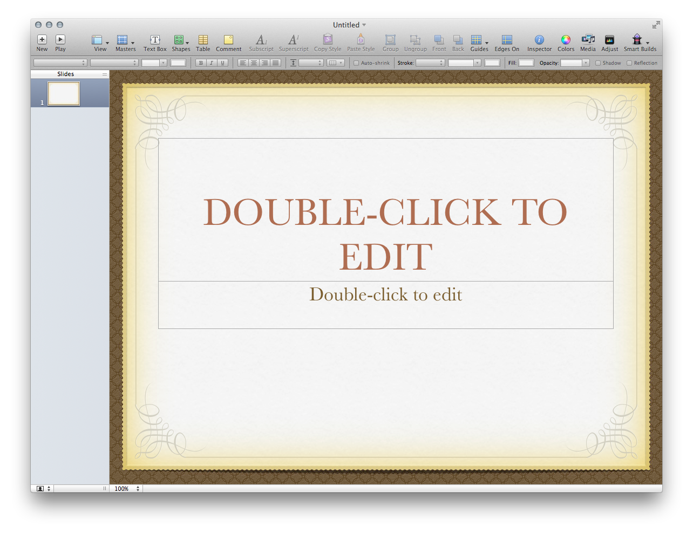
Great variability:
checkbox button, toolbar button, toggle button, radio button …
Modeling variability with modular programming languages appeared complex…
Designing with Object-Oriented Programming Languages
Designing with Object-Oriented Programming Languages
Object-oriented programming languages introduce new abstraction mechanisms:
classes,
inheritance,
subtype polymorphism.
(Still) Dominating Programming Paradigm
The roots of object-oriented programming languages are in the sixties.
Dahl and Nygaard, Simula 64, 68
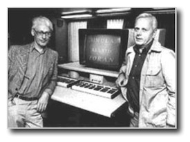
Allan Kay, Smalltalk 70 - 80
Object-oriented languages are popular because they make it easier to design software and program at the same time.
They allow us to more directly express high level information about design components abstracting over differences of their variants.
Make it easier to produce the design, and easier to refine it later.
With stronger type checking, they also help the process of detecting design errors.
Result in a more robust design, in essence a better engineered design.
[…] improvements in programming techniques and programming languages in particular are overwhelmingly more important than anything else in the software business […]
[…] programmers are interested in design […] when more expressive programming languages become available, software developers will adopt them.
Jack Reeves, To Code is to Design, C++ Report 1992
Designing with Functional, Object-Oriented Programming Languages
Designing with Functional, Object-Oriented Programming Languages
By fusing object-oriented and functional programming we are provided with further means to raise our abstraction level. This enables us to better express our intention.
Example
Creating an abstraction to express that we want to repeat something n times.
def repeat[T: scala.reflect.ClassTag](times: Int)(f: ⇒ T): Array[T] = {
val array = new Array[T](times)
var i = 0
while (i < times) { array(i) = f; i += 1 }
array
}
Usage
Now, we can express that we want to read in two values from the command line.
val values = repeat(2) { System.in.read() }
Programming Languages are not a Panacea
Programming Languages are not a Panacea
Accessibility of object-oriented programming drives more complex designs!
Programming languages are powerful tools, but cannot and will never guarantee good designs.
Programming always needs to be done properly to result in good code.
Human creativity remains the main factor.
We need good style to cope with complexity!
...
Help is provided through established practices and techniques, design patterns and principles.
Good style can only be recommended, not enforced!
Eventually style rules will have to be turned into language features to be really effective.
classes.
General Design Principles
The following principles apply at various abstraction levels:
Keep it short and simple
Don't repeat yourself (also just called "DRY-Principle")
A system's design is constrained by the organization's communication structure.
Class Design Principles
About Class Design Principles
Class Design Principles …
state desired properties of class designs.
are heuristics.
help making a class design usable for client classes.
Class Design Principles ...
state desired properties of class designs. E.g. “A class should have only one responsibility.”
are heuristics that serve as guidelines to produce good designs.
are not absolute criteria to judge about the quality of designs.
help making a class design usable for client classes. We think about how our classes are used by other classes.
Class Design Principles aim for code we can efficiently work on!
The S.O.L.I.D. Principles:
Single Responsibility Principle (SRP)
Open-closed Principle (OCP)
Liskov Substitution Principle (LSP)
Interface Segregation Principle (ISP)
Dependency Inversion Principle (DIP)
During its lifetime of a software the (class) design changes constantly. This is a consequence of requirement changes which is the rationale for conducting an iterative design process.
Class Design Principles are not only about the current state of the code, but also give you an understanding of how well the code will be under the effect of change. Especially whether and how changes will affect client classes.
Single Responsibility Principle
Single Responsibility Principle
A class should have only one reason to change.
Example
What do you think of the following design?
Observation:
Rectangle provides a method to draw a rectangle shapes on the screen. For that, Rectangle uses GUI to implement draw().
GeometricApplication is a package for geometrical computations, which also uses Rectangle (area()).
GeometricApplication depends on GUI (GUI has to be deployed along with Rectangle) even if it only needs the geometrical functions of rectangles.
Evaluation:
Rectangle has multiple responsibilities!
Geometrics of rectangles: area()
Drawing of rectangles: draw()
Rectangle has low cohesion!
It is not a representation of a coherent concept, but a point to bundle needed functionality without consideration of their cohesion. Geometrics and drawing do not naturally belong together.
Problems:
Rectangle has multiple reasons to change.
If drawing functionality changes in the future, we need to retest and redeploy Rectangle in context of GeometricalApplication!
A Single-Responsibility Compliant Design
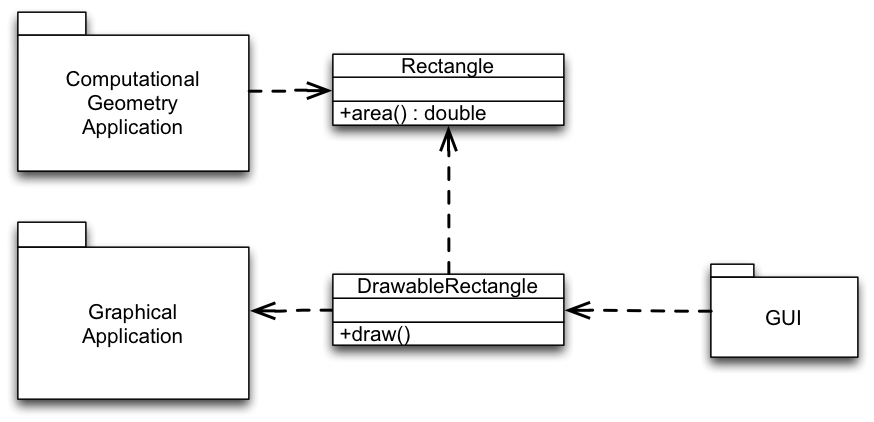
Assessment:
Split responsibilities:
Rectangle models geometric properties of rectangles.
DrawableRectangle models visual properties of graphical rectangles.
Computational Geometry Application uses only Rectangle. It only depends on the geometrical aspects.
GUI uses DrawableRectangle and indirectly Rectangle. It needs both aspects and therefore depends on both.
Both classes can be reused easily!
Only changes to the responsibilities we use will affect us.
Both classes are easily understood!
Each implements one concept. Rectangle represents a rectangle shape by its geometric properties. DrawableRectangle represents a rectangle by its visual properties.
Responsibility and Cohesion
Responsibility
In general, a class is assigned the responsibility to know or do something (one thing).
Examples:
Class PersonData is responsible for knowing the data of a person.
Class CarFactory is responsible for creating Car objects.
A responsibility is an axis of change.
A class with only one responsibility has only one reason to change!
In general, if new functionality must be achieved, or existing functionality needs to be changed, the responsibilities of classes must be changed.
Cohesion
Cohesion measures the degree of togetherness among the elements of a class.
In a class with high cohesion every element is part of the implementation of exactly one concept. The elements of the class work together to achieve one common functionality.
A class with high cohesion implements only one responsibility!
Cohesion actually measures the extent to which operations and data within a class belong to the concept this class is representing. Therefore, a class with low cohesion – i.e., a class where the operations and data actually belongs to several concepts – violates the single-responsibility principle.
Common metrics that are defined to measure the cohesion (such as LCOM(*)) are usually not working at the conceptual level and hence, would identify a class such as PersonData that stores information regarding a person and which usually offers a large number of "getter" and "setter" methods as non-cohesive. But, from a conceptual perspective this class is cohesive.
Applying the single-responsibility principle maximizes the cohesion of classes.
Classes with high cohesion ...
can be reused easily,
are easily understood,
protect clients from changes, that should not affect them.
Further Scenarios
Should we split the responsibilities of this class?
The class Employee which has two responsibilities:
Calculating an employee’s payment.
Storing employee data in the database.
Calculating the payment is part of the business rules. It corresponds to a real-world concept the application shall implement. Storing information in the database is a technical aspect. It is a necessity of the IT architecture that we have selected; does not correspond to a real-world concept.
Mixing business rules and technical aspects is calling for trouble! From experience, we know that both aspects are extremely volatile. Hence, most probably we should split the class in this case.
Application
We should split a class that has two responsibilities if:
Both responsibilities will change separately.
The responsibilities are used separately by other classes.
Responsibilities pertain to optional features of the system.
We should not split responsibilities if:
Both responsibilities will only change together, e.g. if they together implement one common protocol.
Both responsibilities are only used together by other classes.
Responsibilities pertain to mandatory features.
Strategic Application of Principles
Strategic Application of Principles
Only apply a principle, if there is a symptom!
Be agile and modify the design when needed.
Choose the kinds of changes to guide your application of the single-responsibility principle. Guess the most likely kinds of changes derived from experience. Experienced designers hope to know the user and an industry well enough to judge the probability of different kinds of changes.
Invoke the single-responsibility principle against the most probable changes.
An axis of change is an axis of change only if the change actually occurs.
The Smart Home Example
In the following we will reason about a typical object-oriented design of a smart home.
The Smart Home Example
A smart home has many features that are controlled automatically:
Heating, Lighting, Shutters, ...
Location is the base class that declares the functionality that some location can offer (optionally!). Hence, it takes multiple responsibilities.
A prototypical object-oriented solution (Part 2):
class Room extends Location {
public Room(List<Shutter> shutters, List<Light> lights) {
super(shutters, lights);
}
}
class Floor extends CompositeLocation<Room> {
public Floor(List<Room> locations) { super(locations); }
}
class House extends CompositeLocation<Floor> {
public House(List<Floor> locations) { super(locations); }
}
class Main {
public static void main(String[] args) {
House house = new House(null);
List<Floor> floors = house.locations();
}
}
The question: Split or Not Split?
In the prototypical solution all (optional) features are declared by the main interface (Location).
We should split the code, if we want to be able to make functional "packages", such as heating control, lighting control, or security, optional. Consider, e.g., the case that the provider may want to sell several configurations of a smart home, each with a specific selection of features.
Sketching a solution if would like to split (Part 1):
public interface Location { }
interface CompositeLocation<L extends Location> extends Location {
abstract List<L> locations();
}
class Room implements Location { }
class Floor implements CompositeLocation<Room> {
private List<Room> rooms;
public List<Room> locations() { return rooms; }
}
class House implements CompositeLocation<Floor> {
private List<Floor> floors;
public List<Floor> locations() { return floors; }
}
So far we are just modeling the basic structure of a building (House).
Sketching a solution if would like to split (Part 2):
interface LightedLocation extends Location {
List<Light> lights();
}
class LightedRoom extends Room implements LightedLocation {
private List<Light> lights;
public List<Light> lights() { return lights; }
}
abstract class LightedCompositeLocation<LL extends LightedLocation>
implements CompositeLocation<LL> {
public List<Light> lights() {
List<Light> lights = new ArrayList<Light>();
for (LightedLocation child : locations())
lights.addAll(child.lights());
return lights;
}
}
Given the shown code/the proposed solution, we can identify several issues:
class LightedFloor extends ...
The class should inherit from (LightedCompositeLocation and Floor) ? (we don't want code duplication!)
class LightedHouse extends ...
The class should inherit from ? (we don't want code duplication!)
Imagine that we have another additional feature; e.g., shutters and we want to avoid code duplication!
Ideally, we would like to have several versions of class definitions - one per responsibility - which can be “mixed and matched” as needed.
Splitting up using Scala (Java Inspired Base):
trait Shutter
trait Light
abstract class Location {
def shutters: List[Shutter]
def lights: List[Light]
}
class Room(
val lights: List[Light],
val shutters: List[Shutter]) extends Location
abstract class CompositeLocation[L <: Location] extends Location {
def lights: List[Light] = locations.flatMap(_.lights)
def shutters: List[Shutter] = locations.flatMap(_.shutters)
def locations: List[L]
}
class Floor(val locations: List[Room]) extends CompositeLocation[Room]
class House(val locations: List[Floor]) extends CompositeLocation[Floor]
object Main extends App {
val house = new House(new Floor(new Room(Nil, Nil) :: Nil) :: Nil)
val floors: List[Floor] = new House(Nil).locations
}
Splitting up using Scala (Base):
trait Base {
trait Location {}
type location <: Location
trait Room extends Location
type room <: Room
def createRoom(): room // factory method
trait CompositeLocation[L <: Location] extends Location {
def locations: List[L]
}
trait Floor extends CompositeLocation[room]
type floor <: Floor
def createFloor(locations: List[room]): floor // factory method
trait House extends CompositeLocation[floor]
type house <: House
def createHouse(locations: List[floor]): house // factory method
def buildHouse(specification: String): house = {
// imagine to parse the specification...
createHouse(List(createFloor(List(createRoom()))))
}
}
Note, that the buildHouse method constructs a house object though the concrete type is not yet known.
What we want to achieve is that:
Features that are developed independently (such as heating, cooling or lighting) can be (freely) combined
The solution is type safe even in the presence of new optional features (which requires appropriate support by the available programming language)
We do not duplicate code (Copy & Paste programming).
Additionally, the underlying programming language should also support separate compilation to enable us to deploy our solution independently.
Splitting up using Scala (Lighting Feature):
trait Lighten { def lights(): List[Light] }
trait Lighted extends Base {
trait Location extends super.Location with Lighten {
def turnLightsOn = lights.foreach(_.turnOn())
def turnLightsOff = lights.foreach(_.turnOff())
}
type location <: Location
trait Room extends super.Room with Location
type room <: Room
trait CompositeLocation[L <: Location]
extends super.CompositeLocation[L]
with Location {
def lights: List[Light] = locations.flatMap(_.lights())
}
trait Floor extends super.Floor with CompositeLocation[room]
type floor <: Floor
trait House extends super.House with CompositeLocation[floor]
type house <: House
}
Splitting up using Scala (Combining Features):
// Dimmed is similar to Lighted
trait LightedAndDimmed extends Lighted with Dimmed {
trait Location
extends super[Lighted].Location with super[Dimmed].Location
type location <: Location
trait Room
extends super[Lighted].Room with super[Dimmed].Room
with Location
type room <: Room
trait CompositeLocation[L <: Location]
extends super[Lighted].CompositeLocation[L]
with super[Dimmed].CompositeLocation[L]
with Location
trait Floor
extends super[Lighted].Floor with super[Dimmed].Floor
with CompositeLocation[room]
type floor <: Floor
// also for House...
}
Splitting up using Scala (Using Our Combined):
object LightedAndDimmedBuilding extends LightedAndDimmed with App {
type location = Location
type room = Room
type floor = Floor
type house = House
def createRoom(): room =
new Room { var lights: List[Light] = Nil;
var shutters: List[Shutter] = Nil }
def createFloor(rooms: List[room]): floor =
new Floor { val locations = rooms }
def createHouse(floors: List[floor]): house =
new House { val locations = floors }
// Demo
val h = buildHouse("three floors with 6 rooms each")
h.lights
h.shutters
h.locations
h.turnLightsOn
}
Basically, in the first 4 lines we create type aliases for location, room, floor and house which "fixes" our abstract type definitions. After that we implement the factory methods as required. For the method parameter types and return types, we still use the names of the type definitions.
Summary
A class should have only one reason to change.
Applying the single-responsibility principle maximizes the cohesion of classes.
Classes with high cohesion
can be reused easily,
are easily understood,
protect clients from changes, that should not affect them.
But, be strategic in applying the single-responsibility principle.
Carefully study the context and make informed trade-offs. Guess most likely axes of change and separate along them. Be agile: Only apply the single-responsibility principle when needed.
As we have seen in the previous example, achieving the desired separation may not be straightforward with typical object-oriented mechanisms.
Open-Closed Principle
Open-Closed Principle
Software entities (classes, modules, functions, components, etc.) should be open for extension, but closed for modifications.
Extension: Extending the behavior of a module.
Modification: Changing the code of a module.
Extension and Modification
Why is it important to be closed for modifications?
Open for extension means that when requirements of the application change, we can extend the module with new behaviors that reflect those changes. We change what the module does.
Closed for modification means that changes in behavior do not result in changes in the module's source or binary code.
Several reasons for closing modules against changes:
The module was delivered to customers and a change will not be accepted. If you need to change something later, hopefully you opened your module for extension!
The module is a third-party Library/Framework and only available as binary code. If you need to change something, hopefully the third-party opened the module for extension!
Most importantly: not changing existing code means modular compilation, testing and debugging.
Abstraction is the Key
Abstraction is the Key
To enable extending an entity without modifying it, abstract over subparts of its behavior.
Many programming languages allow to create abstractions that are fixed and yet represent an unbounded group of possible behaviors!
Different kinds of abstraction mechanisms exist:
Object-oriented languages:
abstractions are encoded in abstract base classes resp. interfaces.
unbounded group of possible behaviors is represented by all the possible derivative classes resp. implementations.
Functional languages:
abstractions are encoded in function types.
unbounded group of possible behaviors is represented by all the possible first-class functions of the declared type.
In the following, we shortly discuss the two main ways of abstracting over variability in object-oriented programs.
Abstracting Over Variations
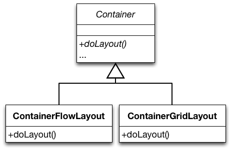
Container declares the layout functionality but does not implement it. The rest of Container is implemented against the abstraction.
Concrete subclasses fill in the details over which Container’s implementation abstract.
Abstracting Over Variations
Container delegates the layout functionality to an abstraction. The rest of its functionality is implemented against this abstraction.
To change the behavior of an instance of Container we configure it with the LayoutManager of our choice.
We can add completely new behavior by implementing our own LayoutManager.
Understanding the Open-Closed Principle
A Possible Design for Drawable Shapes
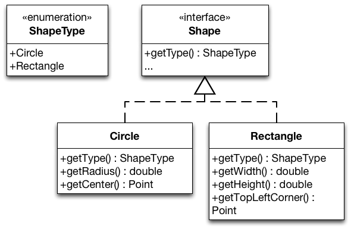
Each Shape identifies itself via the enumeration ShapeType.
Realizations of Shape declare specialized methods for the shape type they represent.
Consider an application that draws shapes - circles and rectangles – on a standard GUI.
Does this design conform to the open-closed design principle?
Evaluating the proposed design:
Adding new shapes is hard, we need to:
Implement a new realization of Shape.
Add a new member to ShapeType.
This possibly leads to a recompile of all other realizations of Shape.
drawAllShapes (and every method that uses shapes of different types) must be changed.
We have to hunt for every place that contains conditional logic that distinguishes between types of shapes and we have to add code to it.
drawAllShapes is hard to reuse!
When we reuse it, we have to bring along Rectangle and Circle.
Rigid, Fragile and Immobile Designs
Rigid designs are hard to change – every change causes many changes to other parts of the system.
Fragile designs tend to break in many places when a single change is made.
Immobile designs contain parts that could be useful in other systems, but the effort and risk involved with separating those parts from the original system are too big.
When we evaluate our design, does it show signs of rigidity, fragility or immobility?
Evaluating the Design
Our design is rigid, fragile and immobile.
The proposed design violates the open-closed design principle with respect to extensions with new kinds of shapes.
We need to close our module against this kind of change by building appropriate abstractions.
Assessing our design w.r.t. its rigidity, fragility and immobility:
Our example design is rigid: Adding a new shape causes many existing classes to be changed.
Our example design is fragile: Many switch/case (if/else) statements that are both hard to find and hard to decipher.
Our example design is immobile: drawAllShapes is hard to reuse.
Refined Design for Drawable Shapes
Makes adding new shapes possible without modification.
We just need to implement a new realization of Shape.
drawAllShapes only depends on Shape.
We can reuse it unchanged.
Evaluating the Extensibility
This solution complies to the open-closed design principle.
This unconditional statement is – of course – not correct. It is not possible to be open for all kinds of extension and also be closed for modification.
Other Kinds of Changes
These abstractions are more of an hindrance to several other kinds of changes.
Consider extending the design with further shape functions:
shape transformations, shape dragging, …
calculating the intersection or union of shapes, etc.
Consider adding support for different operating systems.
The implementation of the drawing functionality varies for different operating systems.
Abstractions May Support or Hinder Change!
Change is easy if change units correspond to abstraction units.
In our example, adding a new type of Shape is easy as it is directly supported by inheritance and subtyping.
Change is tedious if change units do not correspond to abstraction units.
Abstractions Reflect a Viewpoint
Abstractions Reflect a Viewpoint
No matter how “closed” a module is, there will always be some kind of change against which it is not closed.
On the "Natural" Model Structure
Imagine: Development of a "Zoo Software".
Three stakeholders:
Veterinary surgeon: What matters is how animals reproduce!
Trainer: What matters is the intelligence!
Keeper: What matters is what they eat!
One Possible Class Hierarchy When Modeling Animals
When we consider the classes Oviparous and Mammal it is obvious that the class hierarchy reflects the veterinary surgeon's understanding.
The Animal World From a Trainer's Viewpoint
“The show shall start with the pink pelicans and the African geese flying across the stage. They are to land at one end of the arena and then walk towards a small door on the side. At the same time, a killer whale should swim in circles and jump just as the pelicans fly by. After the jump, the sea lion should swim past the whale, jump out of the pool, and walk towards the center stage where the announcer is waiting for him.”
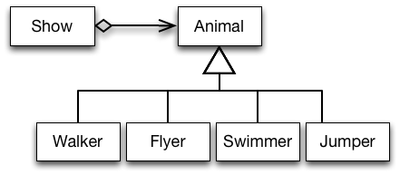
Models Reflecting Different Viewpoints Overlap
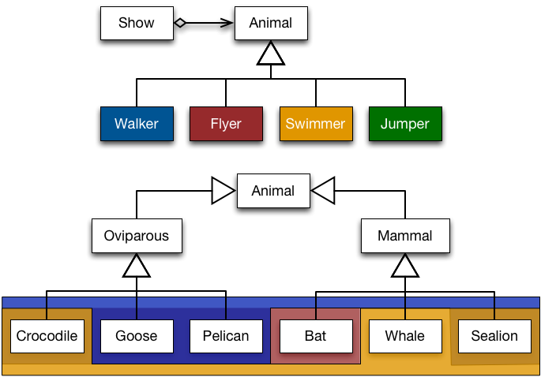
Elements of a category in one model correspond to several categories in the other model (and vice versa).
Current programming languages and tools do not well support modeling the world based on co-existing viewpoints.
Using a programming language which offers more advanced modeling mechanisms, it may be possible to create a design that more closely models the presented world.
Strategic and Agile Closure
Strategic Closure
Choose the kinds of changes against which to close your module.
Guess at the most likely kinds of changes.
Construct abstractions to protect against those changes.
Prescience derived from experience:
Experienced designers hope to know the user and an industry well enough to judge the probability of different kinds of changes.
Invoke open-closed principle against the most probable changes.
Be Agile
Recall that guesses about the likely kinds of changes to an application over time will often be wrong.
Conforming to the open-closed principle is expensive:
Development time and effort to create the appropriate abstractions
Created abstractions might increase the complexity of the design.
Needless, Accidental Complexity.
Incorrect abstractions supported/maintained even if not used.
Be agile: Wait for changes to happen and close against them.
Takeaway
Software entities (classes, modules, functions, etc.) should be open for extension, but closed for modifications.
Bertrand Meyer, 1988
Abstraction is the key to supporting the open-closed design principle.
No matter how “closed” a module is, there will always be some kind of change against which it is not closed.
In object-oriented programs, subclasses are substitutable for superclasses in client code: In clientMethod, sc may be an instance of SomeClass or any of its subclasses.
Hence, if clientMethod works with instances of SomeClass, it does so with instances of any subclass of SomeClass. They provide all methods of SomeClass and eventually more.
Liskov Substitution Principle by Example
Assume, we have implemented a class Rectangle in our system.
class Rectangle {
public void setWidth(int width) {
this.width = width;
}
public void setHeight(int height) {
this.height = height;
}
public void area() {return height * width;}
…
}
Let's now assume that we want to implement a class Square and want to maximize reuse.
Since a square is a rectangle (mathematically speaking), we decided to implement Square as a subclass of Rectangle.
We override setWidth and setHeight and can reuse the implementation of area.
Implementing Square as a subclass of Rectangle:
class Square extends Rectangle {
public void setWidth(int width) {
super.setWidth(width);
super.setHeight(width);
}
public void setHeight(int height) {
super.setWidth(height);
super.setHeight(height);
}
…
}
With this overriding of setHeight and setWidth – to set both dimensions to the same value – instances of Square remain mathematically valid squares.
This model is self-consistent!
We can pass Square wherever Rectangle is expected.
A square does comply to the mathematical properties of a rectangle: A square has four edges and only right angles and is therefore a rectangle.
We can indeed pass Square wherever Rectangle is expected, as far as the Java type system is concerned.
But, by doing so we may break assumptions that clients of Rectangle make about the “behavior” of a Rectangle.
A client that works with instances of Rectangle, but breaks when instances of Square are passed to it:
The clientMethod method makes an assumption that is true for Rectangle: setting the width respectively height has no effect on the other attribute. This assumption does not hold for Square.
The Rectangle/Square hierarchy violates the Liskov Substitution Principle (LSP)!
Square is behaviorally not a correct substitution for Rectangle.
A Squaredoes not comply with the behavior of a rectangle: Changing the height/width of a square behaves differently from changing the height/width of a rectangle. Actually, it doesn't make sense to distinguish between the width and the height of a square.
Software Is All About Behavior
Programmers do not define entities that are something, but entities that behave somehow.
Validity is not Intrinsic
Inspecting the Square/Rectangle hierarchy in isolation did not show any problems. In fact it even seemed like a self-consistent design.
We had to inspect the clients to identify problems.
A model viewed in isolation can not be meaningfully validated!
The validity of a model depends on the clients that use it.
Hence, the validity of a model must be judged against the possible uses of the model.
We need to anticipate the assumptions that clients will make about our classes.
To get a LSP compliant solution, we make Rectangle and Square siblings.
We introduce the interface Shape to bundle common methods.
Rectangles and Square - LSP Compliant Solution
Clients of Shape cannot make any assumptions about the behavior of setter methods.
When clients want to change properties of the shapes, they have to work with the concrete classes.
When clients work with the concrete classes, they can make true assumptions about the computation of the area.
So what does the Liskov Substitution Principle add to the common object-oriented subtyping rules?
It’s not enough that instances of SomeSubclass1 and SomeSubclass2 provide all methods declared in SomeClass.
These methods should also behave like their heirs.
A client method should not be able to distinguish the behavior of objects of SomeSubclass1 and SomeSubclass2 from that of objects of SomeClass.
The Liskov Substitution Principle additionally requires behavioral substitutability.
Behavioral Subtyping
S is a behavioral subtype of T, if objects of type T in a program P may be replaced by objects of type S without altering any of the properties of P.
Liskov Substitution Principle and Open-closed Principle
The Relation between LSP and OCP
Consider a function f parameterized over type T
S is a derivate of T.
when passed to f in the guise of objects of type T, objects of type S cause f to misbehave.
S violates the Liskov Substitution Principle.
f is fragile in the presence of S; i.e., f is not closed against derivations of T anymore.
When a developer encounters such code in a real project, the developer of f will most probably put a test to ensure that instances of S are treated properly.
Can you think of straightforward examples of violations of the Liskov Substitution Principle?
Straightforward examples of violations of the Liskov Substitution Principle.
Derivates that override a method of the superclass by an empty method.
Derivates that document that certain methods inherited from the superclass should not be called by clients.
Derivates that throw additional (unchecked) exceptions.
…
More (Sophisticated) Examples of LSP Violations
In the following, we will mention some “obvious means” of introducing LSP violations (also in Java‘s platform classes) and will consider a more sophisticated example.
The class Properties inherits from Hashtable
From the JavaDoc:
Because Properties inherits from Hashtable, the put and putAll methods can be applied to a Properties object. Their use is strongly discouraged as they allow the caller to insert entries whose keys or values are not Strings. The setProperty method should be used instead. If the store or save method is called on a "compromised" Properties object that contains a non-String key or value, the call will fail.
Implementing a Persistent Set
Situation:
We have implemented a library of container classes, including the interface Set (e.g. using Java 1.4). We want to extend the library with support for persistent sets.
A third-party container class capable of persistence, PersistentSet, is available. It accepts objects of type PersistentObject.
Implementing a Persistent Set
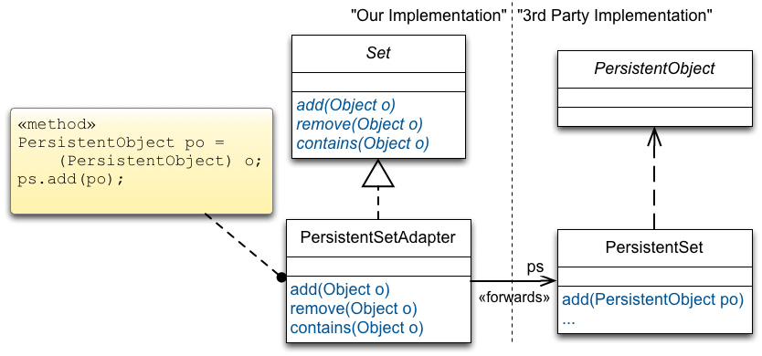
We implement PersistentSetAdapter. It implements Set, refers to an object of the class PersistentSet, ps, and implements Set operations by forwarding to ps.
Only PersistentObjects can be added to PersistentSet. Yet, nothing in Set states this explicitly.
Implementing a Persistent Set
A client that breaks our design
A client method:
public void fill(Set s) {
fill-the-set-with-arbitrary-objects
}
Somewhere else:
Set s = new PersistentSetAdapter(); // Problem!
fill(s);
Assessment:
fill has no idea whether the set passed to it is persistent and cannot know that the elements to fill must be of type PersistentObject.
Adding an arbitrary object causes the cast in PersistentSetAdapter to fail.
A method that worked fine before PersistentAdpaterSet was introduced (fill) breaks, when we introduce PersistentAdpaterSet.
Implementing a Persistent Set
A Liskov Substitution Principle compliant solution
Conclusion:
PersistentSetAdapter does not have a behavioral IS-A relationship to Set. Hence, we must separate their hierarchies and make them siblings.
Mechanisms for Supporting the Liskov Substitution Principle
What mechanisms can we use to support LSP?
Recall:
A model viewed in isolation cannot be meaningfully validated with respect to LSP!
Validity must be judged from the perspective of possible usages of the model.
Hence, we need to anticipate assumptions that clients make about our models – which is de facto impossible. Most of the times we will only be able to view our model in isolation; we do not know how it will be used and how it will be extended by means of inheritance.
Trying to anticipate them all might yield needles complexity.
Introduction to Design-by-Contract
Design by Contract
Solution to the validation problem: A technique for explicitly stating what may be assumed.
Two main aspects of design-by-contract:
We can specify contracts using Pre-, Post-Conditions and Invariants.
They must be respected by subclasses and clients can rely on them.
Contract enforcement (behavioral subtyping).
Tools to check the implementation of subclasses against contracts of superclasses.
The programmer of a class defines a contract that abstractly specifies the behavior on which clients can rely.
Pre- and Post-conditions
Declared for every method of the class.
Preconditions must be true for the method to execute.
Post-conditions must be true after the execution of the method.
Invariants
Properties that are always true for instances of the class.
May be broken temporarily during a method execution, but otherwise hold.
Contract for Rectangle.setWidth(int)
(one possible)
public class Rectangle implements Shape {
private int width;
private int height;
public void setWidth(int w) {
this.width = w;
}
}
Precondition for setWidth(int w):
w > 0
Post-condition for setWidth(int w):
width = w
height unchanged
Contract Enforcement
Subclasses must conform to the contract of their base class!
This is called behavioral subtyping.
It ensures that clients won’t break when instances of subclasses are used in the guise of instances of their heirs!
Behavioral Subtyping
Rule for Preconditions
Preconditions may be replaced by (equal or) weaker ones.
Preconditions of a class imply preconditions of its subclasses.
Rationale:
A derived class must not impose more obligations on clients.
Conditions that clients obey to before executing a method on an object of the base class should suffice to call the same method on instances of subclasses.
Behavioral Subtyping
Rule for Postconditions
Postconditions may be replaced by (equal or) stronger ones.
Postconditions of a class are implied by those of its subclasses.
Rationale:
Properties assumed by clients after executing a method on an object of the base class still hold when the same method is executed on instances of subclasses.
The guarantees that a method gives to clients can only become stronger.
"Standard" Subtyping
“Standard” subtyping relies on contra-variance of the argument types and covariance of the return type for enforcing “pre- and post-conditions on signatures”.
f: T1 → T2
f’: T1’ → T2’
f’ <: f <=> T1 <: T1’ and T2’ <: T2 (f' is a subtype of f)
Scala's Type Hierarchy
Value classes are supported since Scala 2.10.
Scala's Type Hierarchy
When compared to languages such as Java, Scala also has a well-defined least Type, i.e., a type that is the subtype of all other types.
"Standard" Subtyping in Scala
val f: (Seq[_]) ⇒ Boolean
= (s) ⇒ { s eq null }
val af1: (Object) ⇒ Boolean
= null // = f ?
val af2: (List[_]) ⇒ Boolean
= null // = f ?
val af3: (Seq[_]) ⇒ Any
= null // = f ?
val af4: (Seq[_]) ⇒ Nothing
= null // = f ?
(Seq[__]) => Boolean
describes a type that is a function that takes a sequence of some type and returns a Boolean value. It is the same as the Function1[Seq[__],Boolean].
Behavioral subtyping is a stronger notion than subtyping of functions defined in type theory.
LSP imposes some standard requirements on signatures that have been adopted in OO languages:
contra-variance/covariance of method argument/return types.
no new (checked) exceptions should be thrown by methods of the subtype, except for those exceptions that are subtypes of exceptions thrown by the methods of the super-type.
In addition, there are a number of conditions that behavioral subtypes must meet concerning values (rather than types) of input and output.
Behavioral subtyping is undecidable in general.
If q is the property "method foo always terminates“ and holds for objects of type T, it's generally impossible for a program (compiler) to verify that it holds true for some subtype S.
LSP is useful, however, in reasoning about the design of class hierarchies.
Languages and Tools for Design-by-Contract (DbC)
Languages and Tools for Design-by-Contract
Contracts as comments in code or in documentation.
Unit-tests as contracts.
Formalisms and tools for specifying contracts in a declarative way and enforcing them.
Contracts as comments are easy and always possible, but not machine checkable. Unit test are machine checkable, but not declarative, possibly cumbersome and need to maintained/updated whenever a new subclass is added. The Eifel language has built-in support for design-by-contracts (the term was coined by B. Meyer). Java Modeling Language (JML) uses annotations to specify pre-/post-conditions for Java. Recent languages, e.g., IBMs X10, integrate DbC into the type system by means of dependent types (values in type expressions).
Java Modeling Language (JML)
Java Modeling Language
A behavioral interface specification language that can be used to specify the behavior of Java modules.
public class Rectangle implements Shape {
private int width;
private int height;
/*@
In JML, specifications are written as Java annotation comments to the Java program, which hence can be compiled with any Java compiler.
To process JML specifications several tools exist:
an assertion-checking compiler (jmlc) which performs runtime verification of assertions,
a unit testing tool (jmlunit),
an enhanced version of javadoc (jmldoc) that understands JML specifications and
an extended static checker (ESC/Java) a static verification tool that uses JML as its front-end.
Contracts in Documentation
Contracts in Documentation
One should document any restrictions on how a method may be overridden in subclasses.
The Method java.lang.Object.equals(Object o)
The documentation consists almost entirely of restrictions on how it may be overridden.
public boolean equals(Object obj)
Indicates whether some other object is "equal to" this one.
The equals method implements an equivalence relation on non-null object references:
It is reflexive: for any non-null reference value x, x.equals(x) should return true.
It is symmetric: for any non-null reference values x and y, x.equals(y) should return true if and only if y.equals(x) returns true.
It is transitive: for any non-null reference values x, y, and z, if x.equals(y) returns true and y.equals(z) returns true, then x.equals(z) should return true.
It is consistent: for any non-null reference values x and y, multiple invocations of x.equals(y) consistently return true or consistently return false, provided no information used in equals comparisons on the objects is modified.
For any non-null reference value x, x.equals(null) should return false.
The equals method for class Object implements the most discriminating possible equivalence relation on objects...
The method equals in Object implements identity-based equality to mean: Each instance of a class is equal only to itself. Java classes may override it to implement logical equality. This method is a real “hot spot” and it is overridden frequently. Violations of the restrictions may have dire consequences and it can be very difficult to pin down the source of the failure. Many classes, including all collection classes, depend on the objects passed to them obeying the equals contract.
The Contract of Object.equals(Object o)
In the following, we will discuss two restrictions on overriding equals from chapter 3 of the book.
Example Implementation of Object.equals(Object o)
/**
* Case-insensitive string. Case of the original string is
* preserved by toString, but ignored in comparisons.
*/
public final class CaseInsensitiveString {
private String s;
public CaseInsensitiveString(String s) {
if (s == null) throw new NullPointerException();
this.s = s;
}
public boolean equals(Object o) {
if (o instanceof CaseInsensitiveString)
return s.equalsIgnoreCase(((CaseInsensitiveString)o).s);
if (o instanceof String)
return s.equalsIgnoreCase((String)o);
return false;
}
...// Remainder omitted
}
This implementation violates the defined contract. The requirement that the implementation has to be symmetric is violated:
CaseInsensitiveString cis = new CaseInsensitiveString("Polish");
List list = new ArrayList();
list.add(cis);
return list.contains("polish"); // true or false ?
Nobody knows what `list.contains(s) would return. The result may vary from one Java implementation to another. The result changes when we check the equality of the parameter against the element or vice versa!
Once you have violated equals's contract, you simply don’t know how other objects will behave when confronted with your object.
The Implementation of java.net.URL.equals
public boolean equals(Object obj)
Compares this URL for equality with another object.
If the given object is not a URL then this method immediately returns false.
Two URL objects are equal if they have the same protocol, reference equivalent hosts, have the same port number on the host, and the same file and fragment of the file.
Two hosts are considered equivalent if both host names can be resolved into the same IP addresses; else if either host name can't be resolved, the host names must be equal without regard to case; or both host names equal to null.
Since hosts comparison requires name resolution, this operation is a blocking operation.
…
Assessment:
java.net.URL’s equals method violates the consistent part of equals contract.
The implementation of that method relies on the IP addresses of the hosts in URLs being compared.
Translating a host name to an IP address can require network access, and it isn’t guaranteed to yield the same results over time.
This can cause the URL equals method to violate the equals contract, and it has caused problems in practice.
(Unfortunately, this behavior cannot be changed due to compatibility requirements.)
Enforcing Documented Contracts
Maybe hard when done manually …
May require very powerful tooling (theorem proving) …
Is un-decidable in general.
The Imperative of Documenting Contracts
It is necessary to carefully and precisely document methods that may be overridden because one cannot deduce the intended specification from the code.
Example:
package java.lang;
class Object {
public boolean equals(Object ob ) {
return this == ob;
}
}
(Recall equals's contract!)
The Imperative of Documenting Contracts
RFC (Request for Comments) 2119 defines keywords - may, should, must, etc. – which can be used to express so-called „subclassing directives“.
Example:
/**
* Subclasses should override.
* Subclasses may call super
* New implementation should call addPage
*/
public void addPages() {...}
Contracts can also be regarded as a way of recording details of method responsibilities.
Writing contracts...
… helps to avoid constantly checking arguments.
(E.g. consider the complexity of checking that a given array is sorted (precondition) vs. finding a value in a sorted array (functionality of a method)).
… helps to determine who is responsible:
/*@ requires x >= 0.0;
@ ensures JMLDouble.approximatelyEqualTo(x,
@ \result * \result, eps);
@*/
public static double sqrt(doublex) {…}
Here, the client has the obligation to pass a non-negative number and can expect to get an approximation of the square root. The implementor has the obligation to compute and return square roots. It can assume that the argument is non-negative.
On the Quality of the Documentation
When documenting methods that may be overridden, one must be careful to document the method in a way that will make sense for all potential overrides of the function.
Investigations we have done with documentations of stable, intensively used frameworks in the context of the CodeRecommenders project show that often there is a discrepancy between documentation and the actual overriding. Two possible reasons:
outdated documentation,
framework designer cannot foresee all possible extension/usage scenarios.
Generating API Documentation with JAutoDoc
The complete documentation was auto-generated.
/**
* The number of questions.
*/
private int numberOfQuestions;
/**
* Sets the number of questions.
*
* @param numberOfQuestions the number of questions
* @throws IllegalArgumentException the illegal argument exception
*/
public void setNumberOfQuestions(int numberOfQuestions)
throws IllegalArgumentException {
if (numberOfQuestions < 0) {
throw new IllegalArgumentException("numberOfQuestions < 0");
}
this.numberOfQuestions = numberOfQuestions;
}
Takeaway
Takeaway
Subtypes must be behaviorally substitutable for their base types.
Behavioral subtyping extends “standard” OO subtyping.
Additionally ensures that assumptions of clients about the behavior of a base class are not broken by subclasses.
Behavioral subtyping helps with supporting OCP.
Only behavioral subclassing (subtyping) truly supports open-closed designs.
Design-by-Contract is a technique for supporting LSP.
Makes the contract of a class to be assumed by the clients and respected by subclasses explicit (and checkable).
Interface Segregation Principle (ISP)
Interface Segregation Principle
Clients should not be forced to depend on methods that they do not use.
Introduction by Example
Introduction by Example
Consider the development of software for an automatic teller machine (ATM):
Support for the following types of transactions is required: withdraw, deposit, and transfer
Support for different languages and support for different kinds of UIs is also required
Each transaction class needs to call methods on the GUI
E.g., to ask for the amount to deposit, withdraw, transfer.
Assessment:
ISP tells us to avoid this. Each transaction class uses a part of the interface, but depends on all others. Any change affects all transactions.
A Polluted Interface
ATM UI is a polluted interface:
It declares methods that do not belong together.
It forces classes to depend on unused methods and therefore depend on changes that should not affect them.
ISP states that such interfaces should be split.
The Rationale Behind ISP
The Rationale Behind ISP
When clients depend on methods they do not use, they become subject to changes forced upon these methods by other clients.
This causes coupling between all clients.
How does an ISP compliant solution look like?
An ISP Compliant Solution
Proliferation of Interfaces
Proliferation of Interfaces
Try to group possible clients of a class and have an interface for each group.
But:
Segregating interfaces should not be overdone!
If you overdue the application of the interface segregation principle, you will end up with 2n-1 interfaces for a class with n methods.
Recall that, in general, a class implementing many interfaces may be a sign of a violation of the single-responsibility principle.
Takeaway
Takeaway
Clients should not be forced to depend on methods that they do not use.
Dependency Inversion Principle (DIP)
Dependency-Inversion Principle
High-level modules should not depend on low-level modules. Both should depend on abstractions.
Abstractions should not depend on details. Details should depend on abstractions.
Example
Introduction by Example
A small design excerpt from the smart-home scenario:
Behavior of Button:
The button is capable of “sensing” whether it has been activated/deactivated by the user.
Once a change is detected, it turns the Lamp on, respectively off.
Assessment:
We cannot reuse Button since it depends directly on Lamp.
(But there are plenty of other uses for Button.)
Button should not depend on the details represented by Lamp.
These are symptoms of the real problem (Violation of the Dependency-Inversion Principle).
The high-level policy (detection of on/off gestures) underlying this (mini) design depends on the low-level details.
The underlying abstraction is the detection of on/off gestures and their delegation to a server object that can handle them.
If the interface of Lamp is changed, Button has to be at least tested or even adjusted, even though the policy that Button represents is not changed!
To make the high-level policy independent of details we should be able to define it independent of the details of Lamp or any other specific device.
A Dependency-Inversion Principle Compliant Solution
Now Button only depends on abstractions; it can be reused with various classes that implement Switchable.
Changes in Lamp will not affect Button.
The dependencies have been inverted: Lamp now has to conform to the interface defined by Button.
Actually: both depend on an abstraction!
The Rationale behind the Dependency-Inversion Principle
The Rationale
High-level, low-level modules. Good software designs are structured into modules.
High-level modules contain the important policy decisions and business models of an application – The identity of the application.
Low-level modules contain detailed implementations of individual mechanisms needed to realize the policy.
High-level policy: The abstraction that underlies the application; the truth that does not vary when details are changed; the system inside the system; the metaphor.
High-level policies and business processes is what we want to reuse. If high-level modules depend on the low-level modules changes to the lower level details will force high-level modules to be tested again/to be changed. Additionally, it becomes harder if not practically impossible to use them in other contexts. It is the high-level modules that should influence the low-level details.
Advanced Example
Example - Regulating the Temperature
We have three modules where Regulate uses the other two:
Regulate pulls data about the current temperature from the Thermometer component and
Regulate signals the Furnace component to increase or decrease heat.
Example - Regulating the Temperature
Layers and Dependencies
Layers and Dependencies
„…all well-structured object-oriented architectures have clearly defined layers, with each layer providing some coherent set of services through a well-defined and controlled interface…“
Grady Booch
A possible Interpretation:
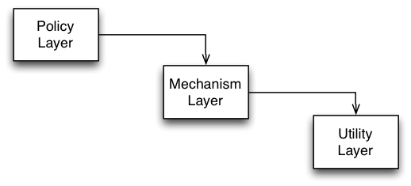
The higher the module is positioned in a layered architecture, the more general the function it implements.
The lower the module, the more detailed the function it implements.
This interpretation clearly violates DIP. Higher-level modules depend on lower-level modules.
This is actually a typical structure of a layered architecture realized with structured programming (e.g., using "C").
Layers and Dependencies
Inverted Layer Dependencies
An upper-layer declares (owns) interfaces for services it needs.
Lower-layer implements these interfaces.
Upper-layer uses lower-layer by the interface.
The upper layer does not depend on the lower-layer.
Lower-layer depends on the interface declared by the upper-layer.
Usually, we think of utility libraries as owning their own interfaces. (A relict from structured programming era.) Due to ownership inversion, Policy is unaffected by changes in Mechanism or Utility.
Naive Heuristic for Ensuring DIP
Naive Heuristic for Ensuring DIP
DO NOT DEPEND ON A CONCRETE CLASS.
All relationships in a program should terminate on an abstract class or an interface.
No class should hold a reference to a concrete class.
No class should derive from a concrete class.
No method should override an implemented method of any of its base classes.
This heuristic is usually violated at least once in every program:
Some class will have to create concrete classes.
Subclass relationships do often terminate at a concrete class.
The heuristic seems naive for concrete stable classes, e.g., String in Java. But, concrete application classes are generally volatile and you should not depend on them. Their volatility can be isolated by keeping them behind abstract interfaces owned by clients.
Takeaway
Takeaway
High-level modules should not depend on low-level modules. Both should depend on abstractions.
Traditional structural programming creates a dependency structure in which policies depend on details.
(Policies become vulnerable to changes in the details.)
Object-orientation enables to invert the dependency:
Policy and details depend on abstractions.
Service interfaces are owned by their clients.
Inversion of dependency is the hallmark of good object-oriented design.
(Implies an inversion of interface ownership.)
Inheritance
A Critical View On Inheritance
Inheritance is the main built-in variability mechanism of OO languages.
Common functionality can be implemented by a base class and each variation can be implemented by a separate subclass.
In the following, we analyze the strengths and deficiencies of inheritance with respect to supporting variability.
Many design patterns that we will discuss in the following sections propose solutions to compensate for deficiencies of inheritance.
This section serves as a bridge between the block on design principles and the blocks about design patterns and advanced languages.
Desired Properties Of Inheritance
Desired Properties
Built-in support for OCP.
Good Modularity.
Support for structural variations.
Variations can be represented in type declarations.
A good support for OCP, reduces the need to anticipate variations. Inheritance allows replacing the implementation of arbitrary methods of a base class (unless it is explicitly forbidden, e.g., in Java methods can be declared as final).
Of course, support for variability in a class is conditioned by the granularity of its methods and the abstractions built-in.
When we achieve good modularity, the base class can remain free of any variation-specific functionality; each variation is implemented in a separate subclass.
In general, inheritance allows to design the most suitable interface for each variation.
Different variations of a type may need to extend the base interface with variation-specific fields and methods. (In addition to varying the implementation of the inherited base interface.)
The property that variations can be represented in type declarations is necessary for type-safe access of variation-specific interfaces.
Desired Properties By Example
Variation of selection functionality of table widgets.
class TableBase extends Widget {
TableModel model;
String getCellText(int row, int col){return model.getCellText(row, col);}
void paintCell(int r, int c){getCellText(row, col) … }
}
abstract class TableSel extends TableBase {
abstract boolean isSelected(int row, int col);
void paintCell(int row, int col) { if (isSelected(row, col)) … }
}
class TableSingleCellSel extends TableSel {
int currRow; int currCol;
void selectCell(int r, int c){currRow = r; currCol = c;}
boolean isSelected(int r, int c){return r == currRow && c == currCol;}
}
class TableSingleRowSel extends TableSel {
int currRow;
void selectRow(int row) { currRow = row; }
boolean isSelected(int r, int c) { return r == currRow;}
}
class TableRowRangeSel extends TableSel { … }
class TableCellRangeSel extends TableSel { … }
The modularization of these variations by inheritance is illustrated by the given (pseudo-)code:
TableBase implements basic functionality of tables as a variation of common functionality for all widgets, e.g., display of tabular data models.
The abstract class TableSel extends TableBase with functionality that is common for all types of table selection, e.g., rendering of selected cells.
TableSingleCellSel, TableSingleRowSel, TableRowRangeSel, and TableCellRangeSel implement specific types of table selections.
Assessment
Built-in support for OCP:
The implementation of paintCell in TableSel can be overridden.
Good modularity:
Each table selection model is encapsulated in a separate class.
Support for structural variations:
Different operations and variables are declared and implemented by TableSingleCellSel and TableSingleRowSel: currRow, currCel, selectCell and currRow, selectRow, respectively.
Can design the most suitable interface for each type of table selection.
Do not need to design a base interface that fits all future variations.
Variations can be represented in type declarations:
We know that a variable declared with type TableSingleRowSel would always refer to a table supporting single row selection.
Deficiencies of Inheritance
Non-Reusable, Hard-to-Compose Extensions
Non-Reusable, Hard-to-Compose Extensions
An Extract from Java’s Stream Hierarchy
Consider an extract from java.io package that consists of classes for reading from a source. Streams abstract from concrete data sources and sinks:
InputStream is root of stream classes reading from a data source.
FileInputStream implements streams that read from a file.
PipedInputStream implements streams that read from a PipedOutputStream.
Typically, a thread reads from a PipedInputStream data written to the corresponding PipedOutputStream by another thread.
ByteArrayInputStream implements streams that read from memory.
Non-Reusable, Hard-to-Compose Extensions
An Extract from Java’s Stream Hierarchy -- A Simple Variation
Need a variation of ByteArrayInputStream capable of reading whole sentences and not just single bytes.
We could implement it as a subclass of ByteArrayInputStream. The blue part in the name of the class denotes the delta (DataInputStream) needed to implement this variation.
Further Variations that are conceivable:
Reading whole sentences with other kinds of streams:
FileInputStream objects that are able to read whole sentences.
PipedInputStream should read whole sentences too.
…
Writing the given data back (“red” in the following slide)
Buffering content (“green” in the following slide),
Counting the numbers of lines processed,
…
Non-Reusable, Hard-to-Compose Extensions
An Extract from Java’s Stream Hierarchy -- A Simple Variation
Each kind of variation would have to be re-implemented
for all kinds of streams,
for all meaningful combinations of variations
Assessment: The design is complex and suffers from a huge amount of code duplication.
Non-Reusable, Hard-to-Compose Extensions
Extensions defined in subclasses of a base class cannot be reused with other base classes.
Result:
Code duplication
Maintenance nightmare
A particular type of variation needs to be re-implemented for all siblings of a base type which results in code duplication.
Large number of independent extensions are possible:
For every new functionality we want.
For every combination of every functionality we want.
Maintenance nightmare: exponential growth of number of classes.
Weak Support for Dynamic Variability
Weak Support for Dynamic Variability
Variations supported by an object are fixed at object creation time and cannot be (re-)configured dynamically.
Dynamic Variability Illustrated (I)
The configuration of an object’s implementation may depend on values from the runtime context.
Potential Solution:
Mapping from runtime values to classes to be instantiated can be implemented by conditional statements.
Issue:
Such a mapping is error-prone and not extensible.
When new variants of the class are introduced, the mapping from configuration variables to classes to instantiate must be changed.
Example:
Table widget options may come from some dynamic configuration panel; depending on the configuration options, different compositions of table widget features need to be instantiated.
Dynamic Variability Illustrated (II)
The behavior of an object may vary depending on its state or context of use.
Potential Solution:
Mapping from runtime values to object behavior can be implemented by conditional statements in the implementation of object’s methods.
Issue:
Such a mapping is error-prone and not extensible.
When new variants of the behavior are introduced, the mapping from dynamic variables to implementations must be changed.
Example:
An account object’s behavior may vary depending on the amount of money available. The behavior of a service then may need to vary depending on the client’s capabilities.
The Fragile Base Class Problem
Cf. Item 17 of Joshua Bloch's, Effective Java.
The Fragile Base Class Problem Illustrated
The Fragile Base Class Problem Illustrated
An Instrumented HashSet
import java.util.*;
public class InstrumentedHashSet<E> extends HashSet<E> {
private int addCount = 0;
public InstrumentedHashSet() { }
public InstrumentedHashSet(int initCap, float loadFactor) {
super(initCap, loadFactor);
}
@Override public boolean add(E e) { addCount++; return super.add(e); }
@Override public boolean addAll(Collection<? extends E> c) {
addCount += c.size();
return super.addAll(c);
}
public int getAddCount() { return addCount; }
public static void main(String[] args) {
InstrumentedHashSet<String> s = new InstrumentedHashSet<String>();
s.addAll(Arrays.asList("aaa", "bbb", "ccc"));
System.out.println(s.getAddCount());
}
}
Suppose we want to implement HashSets that know the number of their elements.
We implement a class InstrumentedHashSet that inherits from HashSet and overrides methods that change the state of a HashSet …
The answer to the question is 6 because the implementation of addAll in HashSet internally calls this.add(...). Hence, added elements are counted twice.
The Fragile Base Class Problem Illustrated
An Instrumented HashSet
import java.util.*;
public class InstrumentedHashSet<E> extends HashSet<E> {
private int addCount = 0;
public InstrumentedHashSet() { }
public InstrumentedHashSet(int initCap, float loadFactor) {
super(initCap, loadFactor);
}
@Override public boolean add(E e) { addCount++; return super.add(e); }
// @Override public boolean addAll(Collection<? extends E> c) {
// addCount += c.size();
// return super.addAll(c);
// }
public int getAddCount() { return addCount; }
public static void main(String[] args) {
InstrumentedHashSet<String> s = new InstrumentedHashSet<String>();
s.addAll(Arrays.asList(“aaa", “bbb", “ccc"));
System.out.println(s.getAddCount());
}
}
For the moment yes. But, not principally.
What if in the future the designers of HashSet decide to re-implement addAll to insert the elements of the parameter collection as a block rather than by calling add on each element of the collection? Might be necessary for efficiency reasons.
The Fragile Base Class Problem in a Nutshell
The Fragile Base Class Problem in a Nutshell
Changes in base classes may lead to unforeseen problems in subclasses.
“Inheritance Breaks Encapsulation”
You can modify a base class in a seemingly safe way. But this modification, when inherited by the derived classes, might cause them to malfunction.
You can't tell whether a base class change is safe simply by examining the base class' methods in isolation. You must look at (and test) all derived classes as well.
You must check all code that uses the base class and its derived classes; this code might also be broken by the changed behavior.
A simple change to a key base class can render an entire program inoperable.
The Fragile Base Class Problem in a Nutshell
Fragility by dependencies on the self-call structure
The fragility considered so far is caused by dependencies on the self-call structure of the base class.
Subclasses make assumptions about the calling relationship between public and protected methods of the base class.
These assumptions are implicitly encoded in the overriding decisions of the subclass.
If these assumptions are wrong or violated by future changes of the structure of superclass’ self-calls, the subclass’s behavior is broken.
The Fragile Base Class Problem in a Nutshell
Fragility by addition of new methods.
Another kind of fragility is caused by extensions of the base class with new methods that were not there when the class was subclassed.
Example:
Consider a base collection class.
To ensure some (e.g., security) property, we want to enforce that all elements added to the collection satisfy a certain predicate.
We override every method that is relevant for ensuring the security property to consistently check the predicate.
Yet, the security may be defeated unintentionally if a new method is added to the base class which is relevant for the (e.g., security) property.
Several holes of this nature had to be fixed when Hashtable and Vector were retrofitted to participate in the Java Collection Frameworks.
The Fragile Base Class Problem in a Nutshell
Fragility by addition of new methods.
Accidental method capture: A new release of the base class accidentally includes a method with the same name.
Your code does not compile because the new method in the base class has the same signature but a different return type.
Your methods get involved in things you never thought about because the added method has the same signature and return type.
Taming Inheritance
Taming Inheritance
Implementation inheritance (extends) is a powerful way to achieve code reuse.
But, if used inappropriately, it leads to fragile software.
Next, we discuss rules of thumb for making "good use" of inheritance.
Dos and Don'ts
It is always safe to use inheritance within a package.
The subclass and the superclass implementation are under the control of the same programmers.
It is also OK to extend classes specifically designed and documented for extension.
Avoid inheriting from concrete classes not designed and documented for inheritance across package boundaries.
Design and document for inheritance or else prohibit it.
Joshua Bloch, Effective Java
Classes Must Document Self-Use
Each public/protected method/constructor must indicate self-use:
Which overridable methods it invokes.
In what sequence.
How the results of each invocation affect subsequent processing.
A class must document any circumstances under which it might invoke an overridable method. (Invocations might come from background threads or static initializers.)
Common Conventions for Documenting Self-Use
The description of self-invocations to overridable methods is given at the end of a method’s documentation comment.
The description starts with “This implementation …”.
Indicates that the description tells something about the internal working of the method.
Overridable method = non-final and either public or protected
Example of Documentation On Self-Invocation
Taken from: java.util.AbstractCollection
public boolean remove(Object o)
Removes a single instance of the specified element from this collection.
… This implementation removes the element from the collection using the iterator's remove method.
Note that this implementation throws an UnsupportedOperationException if the iterator returned by this collection's iterator() method does not implement the remove(…) method.
The documentation makes explicit that overriding iterator() will affect the behavior of remove and what the effect would be.
Documenting Self-Use In API Documentation
Do implementation details have a rightful place in a good API documentation?
The answer is simple: It depends!
Keep in mind: There are two kinds of clients of an extensible class:
Ordinary clients create instances of the class and call methods in its interface (black-box use).
Clients that extend the class via inheritance.
Ordinary clients should not know such details.
… At least as long as a mechanism for LSP is in place.
Subclassing clients need them. That’s their "interface".
Current documentation techniques and tools lack proper means of separating the two kinds of API documentations.
Provide And Document Hooks To Internals
Example taken from: java.util.AbstractList
protected void removeRange(int fromIndex, int toIndex)
Removes from a list …
This method is called by the clear operation on this list and its sub lists. Overriding this method to take advantage of the internals of the list implementation can substantially improve the performance of the clear operation on this list and its sub lists…
This implementation gets a list iterator positioned before fromIndex and repeatedly calls ListIterator.next and ListIterator.remove. Note: If ListIterator.remove requires linear time, this implementation requires quadratic time.
A class must document the supported hooks to its internals. These internals are irrelevant for ordinary users of the class. But, they are crucial for enabling subclasses to specialize the functionality in an effective way.
Carefully Design and Test Hooks To Internals
Provide as few protected methods and fields as possible
Each of them represents a commitment to an implementation detail.
Designing a class for inheritance places limitations on the class.
Do not provide too few hooks.
A missing protected method can render a class practically unusable for inheritance.
W.r.t. designing the internal hooks and making decisions about the kind and number of internal hooks, no silver bullet exists. You have to think hard, take your best guess, and test.
Test your class for extensibility before releasing them. By writing test subclasses (At least one subclass should be written by someone other than the superclass author).
Constructors Must Not Invoke Overridable Methods
Constructors Must Not Invoke Overridable Methods
Java Example
class JavaSuper {
public JavaSuper() { printState(); }
public void printState() { System.out.println("no state"); }
}
class JavaSub extends JavaSuper {
private int x = 42; // the result of a tough computation
public void printState() { System.out.println("x = " + x); }
}
class JavaDemo {
public static void main(String[] args) {
JavaSuper s = new JavaSub();
s.printState();
}
}
Problem:
An overridable method called by a constructor may get invoked on a non-initialized receiver.
As a result a failure may occur.
Reason:
The superclass constructor runs before the subclass constructor.
The overridden method will get invoked before the subclass constructor has been invoked.
The overridden method will not behave as expected if it depends on any initialization done by the subclass constructor.
Constructors Must Not Invoke Overridable Methods
Scala Example (One-to-one translation of the Java code)
Result:
x = 0
x = 42
Not idiomatic Scala code!
class ScalaSuper {
// executed at the end of the initialization
printState();
def printState() {
println("no state")
}
}
class ScalaSub extends ScalaSuper {
var y: Int = 42 // What was the question?
override def printState() { println("y = "+y) }
}
object ScalaDemo extends App {
val s = new ScalaSub
s.printState() // after initialization
}
Scala Example (Refined using an early field definition clause.)
Result:
x = 42
x = 42
Idiomatic Scala code!
An early field definition clause is used to define the field value before the supertype constructor is called.
class Super {
// executed at the end of the initialization
printState();
def printState() {
println("no state")
}
}
class Sub(var y: Int = 42) extends Super {
override def printState() {
println("y = "+y)
}
}
object Demo extends App {
val s = new Sub
s.printState() // after initialization
}
So far: We considered variations, whose scope are individual classes.
But, no class is an island!
Examples of class groupings:
data structures such as trees and graphs,
sophisticated frameworks,
the entire application.
Classes in a group may be related in different ways:
by references to each other,
by signatures of methods and fields,
by instantiation,
by inheritance,
by shared state and dependencies.
Illustrative Example: Window Menus
Illustrative Example: Window Menus
For illustration, we will consider variations of menu structures:
A menu is a GUI component consisting of a list of menu items corresponding to different application-specific actions.
Menus are usually organized hierarchically: a menu has several menu items.
There may be different variants of menus (popup, menu bar).
There may be different variants of menu items.
A menu item can be associated with a cascade menu which pops up when the item is selected.
Menu and menu item objects are implemented by multiple classes that are organized in inheritance hierarchies to represent variations of the elements of the object structure.
A menu represented by class Menu maintains a list of menu items.
Subclasses of Menu implement specialized menus.
A PopupMenu is a subclass of Menu implementing pop-up menus.
MenuBar is a subclass of Menu, implementing a menu bar which is usually attached at the top edge of a window and serves as the top level menu object of the window.
Simple menu items are implemented by class MenuItem`
Subclasses of MenuItem implement specialized menu items:
class CheckMenuItem for check-box menu items,
class RadioMenuItem for radio-button menu items,
CascadeMenuItem for menu items that open cascade menus. It contains a reference to an instance of a PopupMenu, a subclass of Menu implementing pop-up menus.
Different Kinds of Menus
abstract class Menu {
List<MenuItem> items;
MenuItem itemAt(int i) {
return items.get(i);
}
int itemCount() { return items.size(); }
void addItem(MenuItem item) { items.add(item); }
void addAction(String label, Action action) {
items.add(new MenuItem(label, action));
}
...
}
class PopupMenu extends Menu { ... }
class MenuBar extends Menu { ... }
Classes involved in the implementation of menu functionality refer to each other in the declarations and implementations of their fields and methods.
The extension of menu items with accelerator keys is implemented in class MenuItemAccel, a subclass of MenuItem.
The extension affects both the implementation of existing methods as well as the structure and interface of menu items. E.g., the implementation of the draw method needs to be extended to display the accelerator key besides the label of the item.
New attributes and methods are introduced
to store the key associated to the menu item,
to change this association,
to process an input key,
to display the accelerator key
Menus with Accelerator Keys
abstract class MenuAccel extends Menu {
boolean processKey(KeyStroke ks) {
for (int i = 0; i < itemCount(); i++) {
if (((MenuItemAccel) itemAt(i)).processKey(ks)) return true;
}
return false;
}
void addAction(String label, Action action) {
items.add(new MenuItemAccel(label, action));
}
…
}
MenuAccel implements the extension of menus with accelerator keys:
adds the new method processKey for processing keys
overrides method addAction to ensure that the new item added for an action supports accelerator keys
Non-Explicit Covariant Dependencies
Non-Explicit Covariant Dependencies
Covariant dependencies between objects:
The varying functionality of an object in a group may need to access the corresponding varying functionality of another object of the group.
The type declarations in our design do not express covariant dependencies between the objects of a group.
References between objects are typed by invariant types, which provide a fixed interface.
Covariant dependencies are emulated by type-casts.
abstract class MenuAccel extends Menu {
boolean processKey(KeyStroke ks) {
for (int i = 0; i < itemCount(); i++) {
if (((MenuItemAccel) itemAt(i)).processKey(ks)) return true;
}
return false;
}
…
}
The method processKey in a menu with accelerator keys needs to call processKey on its items.
Items of a menu are accessed by calling the method itemAt.
The method itemAt is inherited from class Menu, where it was declared with return type MenuItem.
Thus, to access the extended functionality of menu items, we must cast the result of itemAt to MenuItemAccel.
The design cannot guarantee that such a type cast will always be successful, because items of MenuAccel are added over the inherited method addItem, which accepts all menu items, both with and without the accelerator functionality.
Potential for LSP violation!
Instantiation-Related Reusability Problems
Instantiation-Related Reusability Problems
Code that instantiates the classes of an object group cannot be reused with different variations of the group.
abstract class Menu {
void addAction(String label, Action action) {
items.add(new MenuItem( // <= Creates a MenuItem
label, action
));
}
…
}
abstract class MenuAccel extends Menu {
void addAction(String label, Action action) {
items.add(new MenuItemAccel( // <= Creates a MenuItemAccel
label, action
));
}
…
}
Instantiation code can be spread all over the application.
MenuItem is instantiated in Menu.addAction(...).
In MenuAccel, we override addAction(...), so that it instantiates MenuItemAccel.
A menu of an application can be built from different reusable pieces, provided by different menu contributors.
Menu Contributor for Operations on Files
A menu of an application can be built from different reusable pieces, provided by different menu contributors.
class FileMenuContrib implements MenuContributor {
void contribute(Menu menu) {
CascadeMenuItem openWith = new CascadeMenuItem(”Open With”);
menu.addItem(openWith);
MenuItem openWithTE =
new MenuItem(”Text Editor”, createOpenWithTEAction());
openWith.addItem(openWithTE);
MenuItem readOnly =
new CheckMenuItem(”Read Only”, createReadOnlyAction());
menu.addItem(readOnly)
…
}
…
}
The code shows the implementation of a menu contributor for operations on files. It implements the method contribute, which extends the given menu object with menu items to open files with different text editors, to change the read-only flag of the file, and so on. Since the menu items are created by directly instantiating the respective classes, this piece of code cannot be reused for menus with support for key accelerators or any other extensions of the menu functionality.
Instantiation-Related Reusability Problem
In some situations, overriding of instantiation code can cause a cascade effect.
An extension of class C mandates extensions of all classes that instantiate C.
This in turn mandates extensions of further classes that instantiate classes that instantiate C.
The Abstract Factory design pattern enables abstraction from group variations by late-bound instantiation of the classes of the group’s objects.
Factories for Instantiating Objects
class FileMenuContrib implements MenuContributor {
void contribute(
Menu menu,
MenuFactory factory // <= we need a reference to the factory
) {
MenuItem openWith =
factory.createCascadeMenuItem(”Open With”);
menu.addItem(openWith);
MenuItem openWithTE = factory.createMenuItem(...);
openWith.addItem(openWithTE);
…
MenuItem readOnly = factory.createCheckMenuItem(...);
menu.addItem(readOnly)
…
}
…
}
The code of FileMenuContrib can be reused with different variations of menu functionality, by using it with different factory implementations.
Factories for Instantiating Objects
class BaseMenuFactory implements MenuFactory {
MenuItem createMenuItem(String name, Action action) {
return new MenuItem(name, action);
}
CascadeMenuItem createCascadeMenuItem(String name) {
return new CasadeMenuItem(name);
}
…
}
class AccelMenuFactory implements MenuFactory {
MenuItemAccel createMenuItem(String name, Action action) {
return new MenuItemAccel(name, action);
}
CascadeMenuItemAccel createCascadeMenuItem(String name) {
return new CasadeMenuItemAccel(name);
}
…
}
Deficiencies Of The Factory Pattern
The infrastructure for the design pattern must be implemented and maintained.
Increased complexity of design.
Correct usage of the pattern cannot be enforced:
No guarantee that classes are instantiated exclusively over factory methods,
No guarantee that only objects are used together that are instantiated by the same factory.
Issues with managing the reference to the abstract factory.
The factory can be implemented as a Singleton for convenient access to it within entire application.
This solution would allow to use only one specific variant of the composite within the same application.
A more flexible solution requires explicit passing of the reference to the factory from object to object. Increased complexity of design.
Several studies have shown that the comprehensibility of some code/framework significantly decreases, when it is no longer possible to directly instantiate objects.
Combining Composite & Individual Variations
Combining Composite & Individual Variations
Problem: How to combine variations of individual classes with those of features of a class composite.
Feature variations at the level of object composites (e.g., accelerator key support).
Variations of individual elements of the composite (e.g., variations of menus and items).
}
class CascadeMenuItemAccel extends ???
class CheckMenuItemAccel extends ???
class RadioMenuItemAccel extends ???
Menus with Accelerator Keys
abstract class MenuAccel extends Menu {
boolean processKey(KeyStroke ks) {
for (int i = 0; i < itemCount(); i++) {
if (((MenuItemAccel) itemAt(i)).processKey(ks)) return true;
}
return false;
}
void addAction(String label, Action action) {
items.add(new MenuItemAccel(label, action));
}
…
}
class PopupMenuAccel extends ???
class MenuBarAccel extends ???
In languages with single inheritance, such as Java, combining composite & individual variations is non-trivial and leads to code duplication.
The Problem in a Nutshell
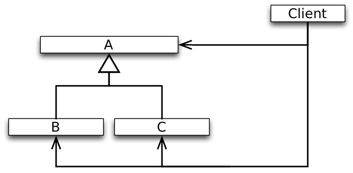
We need to extend A (and parallel to it also its subclasses B and C) with an optional feature (should not necessarily be visible to existing clients).
This excludes the option of modifying A in-place, which would be bad anyway because of OCP.
Alternative Designs
There are two possibilities ( (I) creating a parallel hierarchy or (II) creating additional subclasses of B and C) to add an optional feature to A incrementally without affecting clients in a single inheritance setting.
In both cases, code needs to be duplicated which leads to a maintenance problem.
Combining Composite and Individual Variations
Using some form of multiple inheritance
class PopupMenuAccel extends PopupMenu, MenuAccel { }
class MenuBarAccel extends MenuBar, MenuAccel { }
class CascadeMenuItemAccel extends CascadeMenuItem, MenuItemAccel {
boolean processKey(KeyStroke ks) {
if (((PopupMenuAccel) menu).processKey(ks) ) return true;
return super.processKey(ks);
}
}
class CheckMenuItemAccel extends CheckMenuItem, MenuItemAccel { ... }
class RadioMenuItemAccel extends RadioMenuItem, MenuItemAccel { ... }
The design with multiple inheritance has its problems.
It requires additional class declarations that explicitly combine the extended element class representing the composite variation with sub-classes that describe its individual variations.
Such a design produces an excessive number of classes.
The design is also not stable with respect to extensions with new element types.
The developer must not forget to extend the existing variations of the composite with combinations for the new element types.
Summary
Summary
General agreement in the early days of OO: Classes are the primary unit of organization.
Standard inheritance operates on isolated classes.
Variations of a group of classes can be expressed by applying inheritance to each class from the group separately.
Over the years, it turned out that sets of collaborating classes are also units of organization. In general, extensions will generally affect a set of related classes.
(Single-) Inheritance does not appropriately support OCP with respect to changes that affect a set of related classes!
Mainstream OO languages have only insufficient means for organizing collaborating classes: packages, name spaces, etc. These structures have serious problems:
No means to express variants of a collaboration.
No polymorphism.
No runtime semantics.
Almost all features that proved useful for single classes are not available for sets of related classes.
Desired Features
Incremental programming at the level of sets of related classes.
In analogy to incremental programming at the level of individual classes enabled by inheritance. (I.e., we want to be able to model the accelerator key feature by the difference to the default menu functionality.)
Polymorphism at the level of sets of related classes → Family polymorphism.
In analogy to subtype polymorphism at the level of individual classes.
(I.e., we want to be able to define behavior that is polymorphic with respect to the particular object group variation.)
"Family Polymorphism"
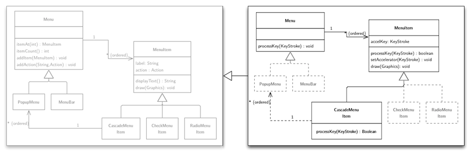
We want to avoid:
code duplication
casts
the necessity to re-implement methods (e.g. addAction)
Ideally would like to have several versions of class definitions - one per responsibility - which can be mixed and matched on-demand.
Recall the SmartHome example.
The question may arise whether this is this a real problem or not. As we will see in the following it is a very real problem which even shows up in mature deployed software.
Case Study: Java AWT and Swing
Some of the material used in the following originally appeared in the paper: Bergel et al, Controlling the Scope of Change in Java, International Conference on Object-Oriented Programming Systems Languages and Applications 2005
AWT is a GUI framework that was included in the first Java release and which directly interfaces the underlying operating system. Therefore, only a small number of widgets are supported to make code easier to port.
Swing extends AWT core classes (by subclassing) with functionality such as: "pluggable look and feel" and "double buffering". The Swing-specific support for double buffering to provide smooth flicker-free animation is implemented, among others, in the methods update(), setLayout(), etc.. Furthermore, Swing adds more widgets.
The Design of AWT and Swing
A small subset of the core of AWT (Component, Container, Frame, Window) and Swing.
Issues:
Features defined in JWindow are duplicated in JFrame. Due to the absence of an inheritance link between JFrame and JWindow (JWindow: 551 LOC; JFrame: 829 LOC, 241 lines of code are duplicated; 43% of JWindow reappears as 29% of JFrame.
While a Window is a Component in AWT, a JWindow is not a JComponent in Swing.
While a Button is a Component and JButton is a JComponent, a JButton is not a Button!
A Swing Component is a Container for other components. Feature inherited from Container (JComponent extends Container).
Types of subcomponents in Container are Component not JComponent.
Ubiquitous runtime type checks and type casts are the result!
AWT Code
public class Container extends Component {
int ncomponents;
Component components[] = new Component[0];
public Component add (Component comp) {
addImpl(comp, null, -1);
return comp;
}
protected void addImpl(Component comp, Object o, int ind) {
…
component[ncomponents++] = comp;
…
}
public Component getComponent(int index) {
return component[index];
}
}
Swing Code
public class JComponent extends Container {
public void paintChildren (Graphics g) {
…
for (; i > = 0 ; i--) {
Component comp = getComponent (i);
isJComponent = (comp instanceof JComponent); // type check
…
((JComponent)comp).getBounds(); // type cast
…
}
}
}
About the Development of Swing
“In the absence of a large existing base of clients of AWT, Swing might have been designed differently, with AWT being refactored and redesigned along the way.
Such a refactoring, however, was not an option and we can witness various anomalies in Swing, such as duplicated code, sub-optimal inheritance relationships, and excessive use of run-time type discrimination and downcasts.”
Takeaway
Takeaway
Inheritance is a powerful mechanism for supporting variations and stable designs in presence of change.
Three desired properties:
Built-in support for OCP and reduced need for preplanning and abstraction building.
Well-modularized implementations of variations.
Support for variation of structure/interface in addition to variations of behavior.
Variations can participate in type declarations.
Inheritance has also deficiencies
Variation implementations are not reusable and not easy to compose.
Code duplication.
Exponential growth of the number of classes; complex designs.
Inheritance does not support dynamic variations – configuring the behavior and structure of an object at runtime.
Fragility of designs due to lack of encapsulation between parents and heirs in an inheritance hierarchy.
Variations that affect a set of related classes are not well supported.
Design Patterns
Introduction to Design Patterns
What is a Design Pattern
A design pattern describes:
A problem that occurs over and over again in our environment.
The core of the solution to that problem,
in such a way that you can use this solution a million times over, without ever doing it the same way twice.
Christopher Alexander, professor of architecture.
What is a Design Pattern
Aggressive disregard for originality.
Rule of three:
Once is an event.
Twice is an incident.
Thrice it’s a pattern.
Motivation for Software Design Patterns
Designing reusable software is hard! (Originality is Overrated)
Some design solutions reoccur. Understanding their core is beneficial.
Systematic software-development
Designing reusable software is hard! (Originality is Overrated)
Novices are overwhelmed.
Experts draw from experience.
Some design solutions reoccur. Understanding their core is beneficial.
Know when to apply.
Know how to establish them in a generic way.
Know the consequence (trade-offs).
Systematic software-development
Documenting expert knowledge.
Use of generic solutions.
Use of shared vocabulary.
Raising the abstraction level.
Design Patterns and Change
Most patterns address issues of software change.
Most patterns allow some part of the system to vary independent of the other parts.
We often try to identify what varies in a system and encapsulate it.
Elements of Design Patterns
Pattern Name
Intent
Solution
Consequences
Pattern Name: A short mnemonic to increase your design vocabulary.
Intent: Description when to apply the pattern (conditions that have to be met before it makes sense to apply the pattern).
Solution: The elements that make up the design, their relationships, responsibilities, and collaborations.
Consequences: Costs and benefits of applying the pattern. Language and implementation issues as well as impact on system flexibility, extensibility, or portability.
The goal is to help understand and evaluate a pattern.
R. Martin's Chess Analogy
When people begin to play chess they learn the rules and physical requirements of the game.
As they progress, they learn the principles.
However, to become a master of chess, one must study games of other masters.
So it is with software. First one learns the rules. The algorithms, data structures, and languages of software.
Later, one learns the principles of software design.
But to truly master software design, one must study the designs of other masters.
R. Martin‘s Chess Analogy
When people begin to play chess they learn the rules and physical requirements of the game. They learn the names of the pieces, the way they move and capture, the board geometry and orientation.
At this point, people can play chess, although they will probably not be very good players.
As they progress, they learn the principles. They learn the value of protecting the pieces and their relative value. They learn the strategic value of the center squares and the power of a threat…
At this point, they can play a good game. They know how to reason through the game and can recognize “stupid” mistakes.
However, to become a master of chess, one must study games of other masters. Buried in those games are patterns that must be understood, memorized, and applied repeatedly until they become second nature.
There are thousands upon thousands of these patterns. Opening patterns are so numerous that there are books dedicated to their variations. Midgame patterns and ending patterns are also prevalent, and the master must be familiar with them all.
So it is with software. First one learns the rules. The algorithms, data structures, and languages of software.
At this point, one can write programs, albeit not very good ones.
Later, one learns the principles of software design. One learns the
importance of cohesion and coupling, of information hiding and dependency management.
But to truly master software design, one must study the designs of other masters. Deep within those designs
are patterns that can be used in other designs. Those patterns must be understood, memorized, and applied
repeatedly until they become second nature.
Software Patterns
Some selected books:
(And many more books!)
Patterns in Architecture
In architecture there are also rules (e.g., specification of required amount of light in a room) as in software design (e.g., low coupling, high cohesion, number of parameters per method), but in both cases these rules allow to judge an existing configuration but do not generate solutions. Patterns are working solutions and represent solutions that obey design rules and, moreover, suggest a specific solution (dining corner with light from three sides, curved entry path).
Patterns are ubiquitous.
Patterns Taught in SED&C
Quick warm up with the Template Method Pattern
The Strategy Pattern
The Decorator Pattern
The Proxy Pattern
The Visitor Pattern
The Bridge Pattern
The Adapter Pattern
The Builder Pattern
The Command Pattern
Template-Method Design Pattern
The Template-Method Pattern in a Nutshell
Intent:
Separate high-level policies from detailed low-level mechanisms.
Separate invariant from variant parts.
Solution Idea
Use abstract classes to:
Define interfaces to detailed mechanisms and variant parts.
Implement high-level policies and invariant parts to these interfaces.
Control sub-class extensions.
Avoid code duplication.
The Template-Method Pattern plays a key role in the design of object-oriented frameworks.
Example Application of Template Method
Functional requirements:
Need a family of sorting algorithms …
(bubble sort, quick sort, etc.)
for different kinds of data (int, double, etc.)
Clients that use sorting algorithms should be reusable with the variety of specific algorithms.
Non-functional requirements on the design
Need to separate the high-level „sorting“ policies from low-level mechanisms.
Low-level mechanisms are responsible for:
deciding when an element is out of order,
swapping out-of-order elements.
Separating the Policy of Sorting
public abstract class BubbleSorter {
protected int length = 0;
Policy:
protected void sort() {
if (length <= 1) return;
for (int nextToLast = length - 2; nextToLast >= 0; nextToLast--)
for (int index = 0; index <= nextToLast; index++)
if (outOfOrder(index)) swap(index);
}
Implement the sorting policy in a template method, sort. Hide mechanisms needed for implementing the sorting policy behind abstract methods (outOfOrder and swap), which are called by the template method.
The advantages and deficiencies of the Template-Method Pattern are basically those of inheritance:
Template method forces mechanisms to extend a specific policy.
Implementation of low-level mechanisms depends on the template.
Cannot re-use low-level mechanisms functionality. swap and outOfOrder implemented in IntBubbleSorter may be useful in other contexts as well, e.g., for quick sort.
Template Method Pattern in Log4J
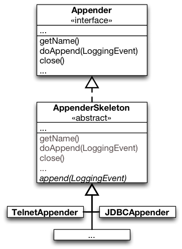
interface Appender
Implement this interface for your own strategies for outputting log statements.
[…]
public void doAppend(LoggingEvent event)
Log in Appender specific way.
abstract class AppenderSkeleton implements Appender
Abstract superclass of the other appenders. This class provides the code for common functionality, such as support for threshold filtering and support for general filters.
[…]
protected abstract void append(LoggingEvent event)
Subclasses should implement this method to perform actual logging.
public void doAppend(LoggingEvent event)
This method performs threshold checks and invokes filters before delegating actual logging to the append(LoggingEvent) method.
Functional Counterpart of Template
One can look at the Template-Method Pattern as a style for emulating higher-order functions available in programming languages that support functional-style programming.
Alternative design for Log4J in Scala?
class AppenderSkeleton(
private val append : (LoggingEvent) => Unit
) {
def doAppend(loggingEvent : LoggingEvent) {
// filtering, threshold checks, …
append(loggingEvent)
}
}
Whether this is a feasible design or not requires a detailed analysis of the context; i.e., the AppenderSkeleton class. In this case, the method close indicates that an Appender may be in different states which suggests that the standard implementation approach is best suited (also in Scala).
A repeat Abstraction in Scala
Policy: Repeat the same operation n-times and store the results in an array.
object RepeatAbstraction {
def repeat[T: scala.reflect.ClassTag](times: Int)(f: ⇒ T): Array[T] = {
val array = new Array[T](times)
var i = 0
while (i < times) { array(i) = f ; i += 1 }
array
} }
Example usage (e.g., using the Scala REPL):
import RepeatAbstraction._
val result: Array[Int] = repeat(3) { System.in.read() }
// Long version:
// val body /*: () ⇒ Int*/ = () ⇒ { System.in.read() }
// val result : Array[Int] = repeat(3)(/*f =*/ body())
println("Charcodes: "+result.mkString(" "))
This solution allows us to reuse our low-level mechanism.
Strategy Design Pattern
The Strategy Pattern in a Nutshell
The Strategy Pattern in a Nutshell
Intent:
Define a family of algorithms,
Encapsulate each one,
Make them interchangeable at runtime.
Strategy lets the algorithm vary dynamically and independently from clients that use it.
When to Use the Strategy Pattern
You need different variants of an algorithm.
You need to select the variant of an algorithm dynamically.
You need different variants of an algorithm.
Strategies can be used when variants of algorithms are implemented as a class hierarchy.
Many related classes differ only in their behavior rather than implementing different related abstractions (types).
Strategies allow to configure a class with one of many behaviors.
You need to select the variant of an algorithm dynamically.
There are classes in your design that define many behaviors that appear as multiple conditional statements in its operations.
Move related conditional branches into a strategy.
Strategy as an Alternative to Inheritance
The Strategy Pattern represents an alternative to modeling different algorithms (sub-behaviors) as subclasses of a usage Context.
Inheritance mixes an algorithm‘s implementation with that of the Context. The Context may become harder to understand, maintain, extend.
Inheritance results in many related classes which only differ in the algorithm or behavior they employ.
When using subclassing we cannot vary the algorithm dynamically.
Encapsulating the algorithm in a Strategy:
Lets you vary the algorithm independently of its usage context.
Makes it easier to switch, understand, and extend the algorithm.
Sorting Example with Strategy
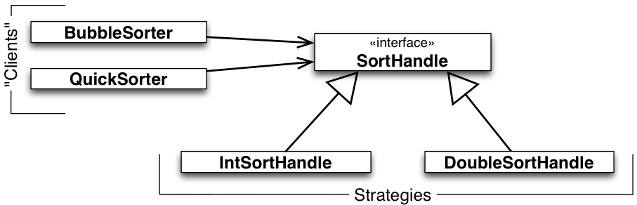
BubbleSorter and QuickSorter embody different high-level policies for sorting the elements of a list. They outsource to SortHandle the decision about the concrete mechanisms for element ordering and for swapping. SortHandle declares the common interface of low-level sorting mechanisms. IntSortHandle and DoubleSortHandle implement this interface in different ways.
Not only are sorting policies reusable with (independent of) different ordering and swapping mechanisms; the latter become reusable with (independent of) different high-level sorting policies.
Furthermore, it is possible to customize the mechanisms dynamically.
Recall the dependency-inversion principle: High-level policies should not depend on low-level mechanisms. Both should depend on abstractions.
Concrete Example: LayoutManager in Swing
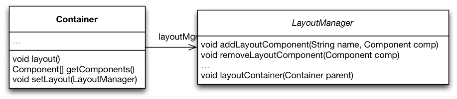
class Container extends Component{
LayoutManager layoutMgr;
…
public LayoutManager getLayout() {
return layoutMgr;
}
public void layout() {
layoutMgr.layoutContainer(this);
}
…
}
For illustration, consider Java Containers with dynamically customizable strategies for laying out its components.
To keep the design open for future extensions, we „outsource“ the variable layout functionality to a strategy object of type LayoutManager.
Container objects hold a reference layoutMgr to a Container object and implement operations for managing this reference.
All operations, whose implementations depend on layout functionality, call specific methods in the interface of LayoutManager.
Functional Counterpart of Strategies
One can look at the Strategy pattern as a style for emulating first-class functions available in functional programming languages.
Strategy objects encapsulate sub-computations in first-class values that can be passed as parameters and returned as results of other computations (methods).
The Cost of the Strategy Pattern
There are trade-offs to be made to profit from the advantages of the Strategy pattern.
These trade-offs must be known and carefully considered when using the Strategy.
Footprint of Variations in Base Functionality
class Container extends Component{
LayoutManager layoutMgr;
…
public LayoutManager getLayout() {
return layoutMgr;
}
public void layout() {
layoutMgr.layoutContainer(this);
}
…
}
The field layoutMgr
Methods to manage strategy objects; e.g., setLayout
Facade methods forwarding functionality to strategy, e.g., layout
There may be clients which are not interested in layout functionality. Hence, this can be considered as a violation of the Single-Responsibility Principle and the Interface-Segregation Principle.
Structural Variation is not Supported
The Strategy interface must fit the needs of all possible variations of the outsourced feature.
This may lead to bloated („One Size Fits All“) interfaces.
The interfaces might be too complicated for some clients not interested in sophisticated variations of a feature.
Careful anticipation of the needs of future variations is needed when designing the interface.
Aggravates extensibility.
An Example „One Size Fits All“-Interface
interface ListSelectionModel {
int SINGLE_SELECTION = 0;
int SINGLE_INTERVAL_SELECTION = 1;
int MULTIPLE_INTERVAL_SELECTION = 2;
/** …
* In {@code SINGLE_SELECTION} selection mode,
* this is equivalent to calling {@code setSelectionInterval},
* and only the second index is used.
* In {@code SINGLE_INTERVAL_SELECTION} selection mode,
* this method behaves like {@code setSelectionInterval},
* unless the given interval is immediately
* adjacent to or overlaps the existing selection,
* and can therefore be used to grow the selection.
* …
*/
void addSelectionInterval(int index0, int index1);
…
}
Consider the list selection feature in Java’s Swing library. This feature is outsourced to the class ListSelectionModel. The interface of ListSelectionModel is designed to satisfy the needs of the most flexible selection model (multiple interval selection). As a result, the interface is too complicated for clients of simpler selection models. See the comments of the methods in the interface.
Yet, the design is not flexible enough, e.g., to cover the needs of extensions of the selection model with arbitrary cell range selection.
When the „One Size Fits All“-Interface Doesn't fit!
At some point, the designers of the LayoutManager were forced to evolve the interface to satisfy new/additional requirements posed by tool builders. This required a new interface that inherits from the original interface. Eventually, type checks and typecasts become necessary and significantly hamper code comprehension, maintainability, testability, and extensibility.
Communication Overhead
Some concrete strategies won't use all information passed to them.
Simple concrete strategies may use none of it.
Context creates/initializes parameters that never get used.
If this is an issue, consider using a tighter coupling between Strategy and Context. Let Strategy know about Context. Two Ways of Strategy-Context Interaction:
Pass the needed information as a parameter.
Context and Strategy decoupled.
Interaction overhead.
Algorithm can’t be adapted to specific needs of context.
Context passes itself as a parameter or Strategy has a reference to its Context.
Reduced interaction overhead.
Context must define a more elaborate interface to its data.
Closer coupling of Strategy and Context.
Variations with Fixed Interface
Strategy objects are effective in modeling features of an object with dynamically varying implementations but fixed interfaces.
Increased Number of Objects
Potentially many strategy objects need to be instantiated.
To alleviate this problem you may use Stateless Strategies (Services):
The number of strategy objects can sometimes be reduced by stateless strategies that several Contexts can share.
Any state is maintained by Context.
Context passes it in each request to the Strategy object.
(No / less coupling between Strategy implementations and Context.)
Shared strategies should not maintain state across invocations.
They are Services.
Composition of Multiple Variations
Strategy objects cannot be effectively used to model interdependent variations.
Illustrative example:
The JTable class in Java’s Swing library uses the interface TableCellRenderer to abstract from different ways in which table cells can be rendered.
But, cell rendering may depend on other kinds of variations of table functionality, e.g., on the presence of selection or drag-and-drop functionality.
Selected cells and drag-and-drop targets must be rendered in a special way.
Such interdependencies between different variation dimensions cannot be properly modularized using strategy objects only.
Takeaway
Takeaway
The core of the Strategy Pattern is to model variability of object features by
outsourcing the implementation of these features in “helper” (strategy) objects
Exploiting “implementation to interfaces” and subtype polymorphism for abstracting over variations of the outsourced feature.
The Strategy pattern addresses two problems of inheritance:
Variations become reusable.
Dynamic variations of features becomes possible.
Technically, a combination of object composition and inheritance is used instead of inheritance only.
The Strategy pattern has its costs:
Variations leave a footprint in the base implementation of the object.
Structural variations are not supported.
Careful planning of a one-size-fits-all interface is needed.
Bloated interfaces and interaction overhead between strategy objects and their usage contexts.
Increased number of objects.
Multiple interdependent variations not properly supported.
Filing the Design Space between Template and Strategy
Using mixin-composition and self-type annotations widens the design space.
trait Component
trait LayoutEngine {
def layout(components: Array[Component])
}
trait BasicLayoutEngine extends LayoutEngine {
def layout(components: Array[Component]) { /*Basic means nothing..*/ }
}
class Container(private val components: Array[Component]) {
this: LayoutEngine ⇒ // <= Self-type annotation
def doLayout() {
layout(components);
}
}
object LayoutEngineDemo extends App {
val c : Container = new Container(Array()) with BasicLayoutEngine
//c.layout (won't compile!)
c.doLayout
println(c)
}
Using this approach the solution is type-safe and variations are (still) reusable. However, dynamic variations of features are no longer possible.
Overall, we have the following advantages:
LayoutEngine (low-level mechanism) is well modularized and reusable
Basically no overhead, because we do not have an additional object (as in case of Template Method)
The interface of Container is not polluted (conforms to the ISP)
and the following disadvantage:
"strategy" is not dynamically exchangeable
Decorator Design Pattern
Intent of the Decorator Pattern
Intent of the Decorator Pattern
We need to add functionality to existing objects
dynamically, i.e., during runtime after the object is created,
without having to implement conditional logic to use the new functionality.
The usual way to add new functionality to an existing design is by means of inheritance. But, as we have already discussed, dynamic extensions are not supported, the extensions are non-reusable, and multiple extensions are hard to combine.
These problems are targeted by Decorator. Decorator is also suggested to solve the fragile base-class problem.
Decorator can be an alternative to Strategy with different trade-offs.
The Decorator Pattern in a Nutshell
The Structure of a Decorator-Based Design
ConcreteComponent is a representative for all classes whose objects should be dynamically extensible with new functionality.
Component can be:
an interface that declares all operations of ConcreteComponent objects whose functionality we want to extend dynamically (here represented by operation),
a common (abstract) superclass of all ConcreteComponent classes, which implements common functionality.
Any Decorator is also a Component:
Maintains a field comp of type Component
Implements the operations declared in Component
Default implementation forwards the same operation to comp.
Special decorators perform some additional functionality before or after forwarding to comp.
The Decorator Pattern by Example
Example Code
DataInputStream dis = new DataInputStream(new FileInputStream(file));
dis.readUnsignedByte();
java.io abstracts various data sources and destinations.
It uses Decorator to modularize various processing algorithms that operate on raw data.
Advantages of Decorator-Based Designs
Each Variation Defined Once
No Code Duplication
Using inheritance only:
Using the Decorator Pattern:
Decorator-based designs share the desired properties of corresponding designs based on inheritance only that variations are well modularized. We define one class per variation of base and decorative functionality.
Unlike inheritance-based designs, decorator-based designs yield variations that are reusable with any class in the Component hierarchy. Furthermore, variations are applied dynamically.
Improved Flexibility
Decorative functionality can be added / removed at run-time.
Combining different decorator classes for a component class enables to mix and match responsibilities as needed.
…
is = new FileInputStream(file);
is.read(…);
…
DataInputStream dis = new DataInputStream(is);
dis.readUnsignedByte();
…
(new BufferedInputStream(dis)).readLine(…);
Easy to add functionality twice.
E.g., given a class BorderDecorator for a TextField, to add a double border, attach two instances of BorderDecorator.
Decorator Avoids Incoherent Classes
No need for feature-bloated classes positioned high up in the inheritance hierarchy to avoid code duplication.
Pay-as-you-go approach: Do not bloat, but extend using fine-grained Decorator classes.
Functionality can be composed from simple pieces.
A client does not need to pay for features it does not use.
Advantages of Decorator-Based Designs
A fine-grained Decorator hierarchy is easy to extend.
Decorator helps to design software that better supports OCP.
Problems of Decorator-Based Designs
Problems of Decorator-Based Designs
Lots of Little Objects
A decorator and its component are not identical (Object identity)
FileInputStream fin = new FileInputStream(“a.txt”);
BufferedInputStream din = new BufferedInputStream(fin);
…
fin.read(); // NO BUFFERING
No Late Binding
Lots of little objects:
A design that uses Decorator often results in systems composed of lots of little objects that all look alike. Objects differ only in the way they are interconnected, not in their interface or in the value of their variables.
Such systems are easy to customize by those who understand them, but can be hard to learn and debug. The responsibility for combining features is put on the shoulders of a library user.
Object identity (A decorator and its component are not identical!):
From an object identity point of view, a decorated component is not identical to the component itself.
You should not rely on object identity when you use decorators.
Easy to "forget" the "decorative" functionality.
No late binding:
A decorator and its component interact via forward semantics.
Forward semantics does not ensure late binding as we know from inheritance.
Delegation semantics is not available in mainstream class-based OO languages.
No Late Binding Illustrated
Task:
Extend the design to enable online access to accounts.
Decorator seems to be the right choice!
Among other things, we decorate the description of accounts with the label “online”.
The way the history is calculated does not need to be decorated, hence, the decorator just forwards.
The diagram shows a simplified extract of the design of a banking application:
There are two kinds of accounts:
Checking accounts for day-to-day bank transactions.
Saving accounts for depositing money with a fixed interest rate.
Accounts know how to return a string that describes them.
Accounts declare a method for printing a history of recently performed transactions.
No Late Binding Illustrated
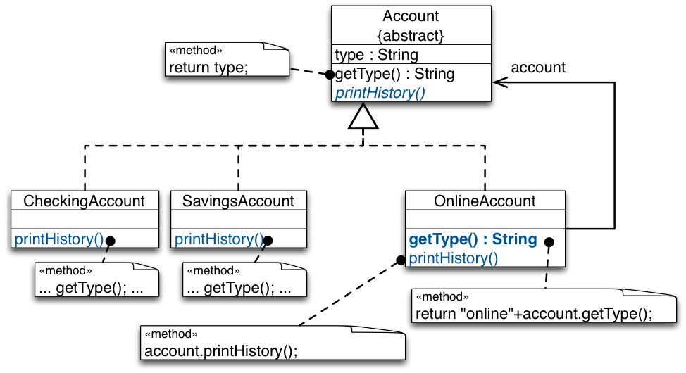
No Late Binding Illustrated
Consider the following client code:
…
Account checkingAcc =
new CheckingAccount(…);
…
Account onlineAcc =
new OnlineAccount(
checkingAccount);
…
onlineAcc.printHistory();
…
Answer: OnlineDecorator decorates getType(). Yet, since CheckingAccount.printHistory() calls getType() via this, the execution escapes the decoration of getType().
Call to onlineDec.printHistory().
a) Call to checkingAcc.printHistory() as the result of the forwarding by the call to account.printHistory() in the implementation of OnlineDecorator.printHistory().
b) Execution of CheckingAccount.printHistory(). Call to getType() inherited from Account, not OnlineAccount!
Implementation Issues
Implementation Issues
Keep the common class (Component) lightweight!
A decorator's interface must conform to the interface of the component it decorates.
There is no need to define an abstract Decorator class when you only need to add one responsibility.
The common class should focus on defining an interface. Defer defining data representation to subclasses. Otherwise, the complexity of Component might make the decorators too heavyweight to use in quantity.
Putting a lot of functionality into Component makes it likely that subclasses will pay for features they do not need.
These issues require pre-planning. Difficult to apply the decorator pattern to 3rd-party component class.
It is often the case that you do not need to define an abstract Decorator class when you're dealing with an existing class hierarchy rather than designing a new one. In this case, you can merge Decorator's responsibility for forwarding requests to the component into the concrete Decorator.
Decorator and the Fragile Base-Class Problem
Decorator and the Fragile Base-Class Problem
The Decorator pattern is suggested in several books (e.g., Effective Java by Joshua Bloch) as a solution to the fragile base-class problem.
Does the use of the Decorator Pattern solve the fragile base-class problem?
The InstrumentedHashSet again…
public class InstrumentedHashSet<E> extends java.util.HashSet<E> {
private int addCount = 0;
…
@Override public boolean add(E e) {
addCount++;
return super.add(e);
}
@Override public boolean addAll(java.util.Collection<? extends E> c) {
addCount += c.size();
return super.addAll(c);
}
public int getAddCount() {
return addCount;
}
}
…
public static void main(String[] args) {
InstrumentedHashSet<String> s = new InstrumentedHashSet<String>();
s.addAll(Arrays.asList("aaa", "bbb", "ccc"));
System.out.println(s.getAddCount());
}
A Decorator-Based InstrumentedSet
Declare an interface Set<E>
Let HashSet<E> implement Set<E>
Define ForwardingSet<E> as an implementation of Set<E>
ForwardingSet<E> (our root Decorator)
Has a field s of type Set<E>
Implements methods in Set<E> by forwarding them to s
InstrumentedSet<E> (a concrete Decorator) extends ForwardingSet<E> and overrides methods add and addAll
A ForwardingSet<E>
import java.util.*;
public class ForwardingSet<E> implements Set<E> {
private final Set<E> s;
public ForwardingSet(Set<E> s) { this.s = s; }
public void clear() { s.clear();}
public boolean contains(Object o) { return s.contains(o); }
public boolean isEmpty(){ return s.isEmpty();}
public int size(){ return s.size();}
public Iterator<E> iterator(){ return s.iterator();}
public boolean add(E e){ return s.add(e);}
public boolean remove(Object o) { return s.remove(o);}
public boolean containsAll(Collection<?> c) { ... }
public boolean addAll(Collection<? extends E> c) { ... }
public boolean removeAll(Collection<?> c) {...}
…
}
An Alternative InstrumentedSet
import java.util.*;
public class InstrumentedSet<E> extends ForwardingSet<E> {
private int addCount = 0;
public InstrumentedSet(Set<E> s) { super(s); }
@Override public boolean add(E e) {
addCount++;
return super.add(e);
}
@Override public boolean addAll(Collection<? extends E> c){
addCount += c.size();
return super.addAll(c);
}
public int getAddCount() { return addCount; }
}
public static void main(String[] args) {
InstrumentedSet<String> s =
new InstrumentedSet<String>(new HashSet<String>());
s.addAll(Arrays.asList("aaa", "bbb", "ccc"));
System.out.println(s.getAddCount());
}
In this case, the value 3 is printed on the screen. The internal call to add in the implementation of addAll in HashSet does not come back to the decorater s; hence, it does not increase the counter.
Bloch's Conclusion:
The Decorator-based solution is better.
There are only few disadvantages:
No late binding.
Tedious to write forwarding methods, „but you do it only once“.
Efficiency impact of forwarding and memory footprint, but „neither turns out to have much impact in practice“
Decorator and the Fragile Base Class
Does the decorator-based design really solve the fragile base-class problem?
Ask yourself:
What happens if I add a new method to the interface?
Doesn‘t the same problems reappear as with inheritance?
Adding a method to the interface may escape the decoration (e.g., imagine a method add(Collection,Filter) is added to Set<E> and to ForwardingSet<E>; after that all compile-time requirements are satisfied, but InstrumentedSet<E> does not override the method and, hence, does not update the counter correctly.)
"Some logic" needs to be reimplemented. E.g., imagine that a method is added to set a filter (setFilter(Filter)) and after that always only those elements are added to the set that pass the filter. Such a change would require to duplicate the logic in our decorator.
Adding a method to the interface may conflict (signature) with the methods defined by the concrete decorator.
Decorator and Strategy
Decorator and Strategy
Decorator and Strategy share the goal of supporting dynamic behavior adaptation.
Decorator and Strategy can be used to simulate the effect of each other.
Simulate the Effect of Each Other
By extending the number of strategies from just one to an open-ended list, we achieve principally the same effect as nesting decorators.
Example:
We can use Strategy to simulate data processing decoration of streams.
Different processing steps can be supported by having the component forward data-processing functionality to a DataProcessing object, which in turn may encapsulate another DataProcessing object. (DataProcessing objects encapsulate data-processing strategies.)
Transparent vs. Non-Transparent Change
Decorator changes a component from the outside:
The component does not know about its decorators.
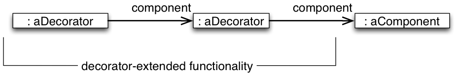
Strategy changes a component from the inside:
Component knows about Strategy-based extensions.
Changing the Skin versus Changing the Guts
Decorator can be viewed as a skin over an object that changes its behavior.
Strategy can be viewed as guts inside an object that changes its behavior.
Preferring Decorator over Strategy
The Decorator has two principal advantages over Strategy:
Improved modularity: The Decorator “infrastructure” does not leave any footprint in the implementation of the decorated object.
Extensible interface: Decorators can extend the interface of the decorated component “on-demand”; No need to plan an “one-size-fits-all” interface.
Consequently, the decorator is better when:
We cannot foresee variations.
It is hard to design an interface that fits all needs of the variations.
Preferring Strategy over Decorator
The Strategy pattern is better when the varying object type is intrinsically heavyweight.
The Decorator pattern is too costly to apply in this case. A Decorator's interface must conform to Component's interface.
A Strategy can have its own specialized interface. E.g., a strategy for rendering a border need only define the interface for rendering a border (drawBorder(), getWidth(), …).
Furthermore, a Strategy class can be lightweight even if the Component class is heavyweight.
Summary
Takeaway Decorator vs. Strategy
Like the Strategy, the Decorator pattern also uses a combination of object composition and inheritance/subtype polymorphism to support dynamic and reusable variations.
Unlike the Strategy, it adapts object behavior from the outside rather than inside.
Unlike Strategy, variations encapsulated in decorator objects do not leave any footprint in the behavior of the objects being adapted.
In that sense, it has a stronger “inheritance” resemblance than Strategy.
Takeaway
Takeaway
Decorator has its own trade-offs.
Decorator may lead to error-prone and hard to understand designs.
Many little objects emulate the behavior of a conceptually single object.
No object identity.
No late-binding.
Not appropriate for modeling the variability of heavy-weight objects with a lot of functionality.
Might not be applicable to third-party library objects.
It does not really solve the fragile base-class problem.
Delegation and Mixin-Composition
A "Static" Decorator
Using mixins we can statically decorate classes (class composition vs. object composition) and also get delegation semantics.
trait Component {
def state : String
def name: String
}
case class AComponent (val id : String) extends Component {
def state = name+":"+id
def name = "A"
}
trait ComponentDecoratorA extends Component {
abstract override def name = "ByADecorated:"+super.name
}
trait ComponentDecoratorB extends Component {
abstract override def name = "ByBDecorated:"+super.name
}
object DemoStructuralDecorator extends App {
val c = new AComponent("42") // static decoration
with ComponentDecoratorA with ComponentDecoratorB
println(c.state)
}
Assessment:
Each Decorator is well modularized
We get delegation semantics.
No overhead (no little objects).
No dynamic decoration.
Task: Apply this example to the Account example.
Ask yourself: Does Mixin-Composition solve the fragile base-class problem?
Scala Class Linearization
Linearization specifies a single linear order for all of the ancestors of a class, including both the regular superclass chain and the parent chains of all of the traits.
Example:
abstract class AbsIterator extends AnyRef { ... }
trait RichIterator extends AbsIterator { ... }
class StringIterator extends AbsIterator { ... }
class Iter extends StringIterator with RichIterator { ... }
In order to allow reuse of compiled classes and to ensure well-defined behavior, the linearization must satisfy a few rules:
The linearization of any class must include unmodified the linearization of any class (but not trait) it extends.
The linearization of any class must include all classes and mixin traits in the linearization of any trait it extends, but the mixin traits need not be in the same order as they appear in the linearization of the traits being mixed in.
No class or trait may appear more than once in the linearization.
Due to linearization, Scala, does not suffer from the diamond inheritance problem, as compared to other languages that offer "classical" multiple inheritance.
Provide a surrogate or placeholder for another object to control access to it.
From the client’s point of view, the proxy behaves just like the actual object.
Typical Variations
Virtual Proxies: Placeholders (as in image example).
Idea
Create expensive objects only on demand.
Objects associated with a large amount of data in a file or database may only be loaded into memory if the operation on the proxy demands that they are loaded.
Implementation
Some subset of operations may be performed without bothering to load the entire object, e.g., return the extent of an image.
Smart References: Additional functionality.
Idea
Replace bare pointer and provide additional actions when accessed.
Examples
Locking / unlocking references to objects used from multiple threads
Reference counting, e.g., for resource management (garbage collection, observer activities)
Remote Proxies: Make distribution transparent.
Idea
Provide a local interface for communicating with objects in a different address space.
Operations on the proxies are delegated to a remote object and return values are passed through the proxy back to the client.
Issues
From the client’s view, the proxy responds just like if the object were local, even though it is actually sending requests over a network.
(Network failures may be impossible to hide… LSP?)
Protection Proxies: Rights management.
Idea
Verify that the caller has permission to perform the operation.
Issues
Different clients may have different access levels for operating on an object
Read-only objects may be protected from unauthorized modifications this way
Exceptions are thrown in such violation cases (LSP?)
Structure
Structure
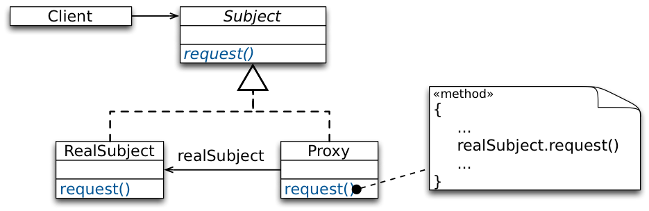
Example
Example
Imagine, you are developing a browser rendering engine.
In this case you do not want to handle all elements in a straightforward manner.
E.g., you immediately want to start laying out the page even if not all images are already completely loaded. However, this should be completely transparent to the layout engine.
Lazy Loading of Images
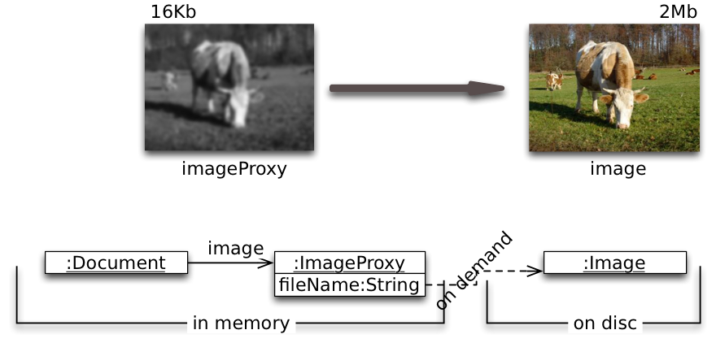
We use another object, an image proxy, that acts as a stand-in for the real image.
The Image Proxy
implements the same interface as the real object.
Client code is unaware that it doesn't use the real object.
instantiates the real object when required, e.g., when the editor asks the proxy to display itself by invoking its draw() operation.
Keeps a reference to the image after creating it to forward subsequent requests to the image.
Lazy Loading of Images - Solution
Summary
Summary
The Proxy Pattern describes how to replace an object with a surrogate object,
without making clients aware of that fact,
while achieving a benefit of some kind:
lazy creation,
resource and/or rights management, or
distribution transparency.
Java's Dynamic Proxy Class
Java's Dynamic Proxy Class
A dynamic proxy class is a class that implements a list of interfaces specified at runtime such that a method invocation through one of the interfaces on an instance of the class will be encoded and dispatched to another object through a uniform interface.
A proxy interface is such an interface that is implemented by a proxy class.
A proxy instance is an instance of a proxy class.
Proxy classes, as well as instances of them, are created using the static methods of the class java.lang.reflect.Proxy.
Java's Dynamic Proxy Class - Example
public interface Foo { Object bar(Object obj); }
public class FooImpl implements Foo { Object bar(Object obj) { … } }
public class DebugProxy implements java.lang.reflect.InvocationHandler {
private Object obj;
public static Object newInstance(Object obj) {
return Proxy.newProxyInstance(
obj.getClass().getClassLoader(),obj.getClass().getInterfaces(),
new DebugProxy(obj));
}
private DebugProxy(Object obj) { this.obj = obj; }
public Object invoke(Object proxy, Method m, Object[] args)
throws Throwable {
System.out.println("before method " + m.getName());
return m.invoke(obj, args);
}
}
What is the "major" difference between the Proxy and the Decorator Pattern?
(Think about the structure and the behavior.)
Is the Proxy Design Pattern subject to the "fragile base class" problem?
In Java, we only have forwarding semantics, but could it be desirable to have delegation semantics, when implementing the proxy pattern?
Delegation semantics would be desirable for a protection proxy, where the different methods have different protection levels. Without delegation semantics, we need to know the self-call structure of the RealSubject to make sure that we check for sufficient access rights.
Visitor Design Pattern
Intent
Intent
The Visitor Pattern enables to add new behavior to existing classes in a fixed class hierarchy without changing this hierarchy.
Intent of the Visitor in Context
Recall the problems of inheritance with modeling variations at the level of multiple objects (object composites).
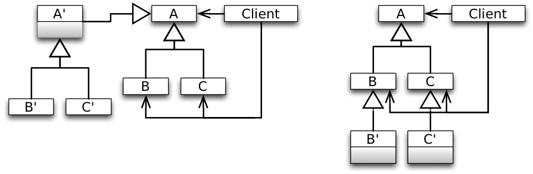
Problems:
Weak support for combining variations at the level of the composite with those at the level of individual elements.
No support for expressing covariant variations.
Instantiation problems.
Solution
Solution Idea
Represent the additional operations to be performed on the elements of an object structure (additional features) as objects (of type Visitor).
Structure
Example Usage:
Element e = new ConcreteElementA(...);
Visitor v = new ConcreteVisitor1(...);
e.accept(v);
The Visitor interface declares a visit method per element type in the object structure.
A Visitor interface describes how to “treat” the element types.
Concrete visitor classes implement the interface specifically, i.e., treat elements differently.
A concrete visitor class corresponds to a particular feature to be added to the object structure.
Elements in the object structure provide the method accept(Visitor).
On being asked to accept a visitor passed to it as a parameter, an element asks the visitor to visit it.
Structure (Long Version)
Case-Study: Arithmetic Expressions
Case-Study: Arithmetic Expressions
Requirements:
A library for (arithmetic) expressions must provide different functionality for:
Formatting an expression to a string.
Computing the value of an expression.
Optimizing an expression.
The library must be extensible with new functionality:
Generate code for different machines,
Various refactorings, e.g., rename variables,
The library must be extensible with new kinds of expressions.
Design Issues:
Impossible to reuse part of library functionality (product lines).
Changing one feature can destabilize other features (SRP).
New features cannot be incrementally added (OCP).
Visitor-Based Design
The dispatch of the operations defined in the Element hierarchy depends on two parameters:
Dynamic type of the receiver Element determines the class that has the needed method look-up table.
Name of the operation being called determines the entry in that table.
For operations that are outsourced to visitors, we need to simulate the same dispatch semantics.
We need to select an implementation of an operation based on both
the dynamic type of the element on which to apply the operation,
the dynamic type of the visitor object representing the operation.
Reflections on the Visitor Structure
Reflections on the Visitor Structure
Can we move the implementation of accept higher up the Element hierarchy?
Answer: No. The method that is called by v.visit(this) is determined at compile-time.
Case-Study: Calculating Shape Intersection
Case-Study: Calculating Shape Intersection
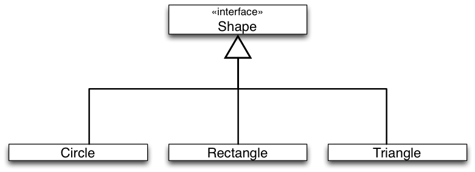
Task:
Implement an intersect operation that calculates whether two given shapes intersect.
TODO Enable: "anim-step:1"
Case-Study: Calculating Shape Intersection
Task:
Implement an intersect operation that calculates whether two given shapes intersect.
Sketch of the solution:
Shape t = new Triangle(…);
Shape r = new Rectangle(…);
if (t.intersect(r)) {…}
For the proposed solution, the implementation of intersect depends on the dynamic type of both the receiver (t) and parameter (r) shapes. Hence, we need to simulate double dispatch in Java.
Case-Study: Calculating Shape Intersection
Simulating Double Dispatch
Case-Study: Calculating Shape Intersection
Simulating Double Dispatch
Shape t = new Triangle(…);
Shape r = new Rectangle(…);
if (t.intersect(r)) {…}
External call t.intersect(r) is dispatched based on dynamic type of t.
Internal call s.intersect(this) is dispatched based on dynamic type of r.
Assessment:
The given design forces every shape class to implement its intersection with every other shape. Adding new shapes means implementing new methods in every other shape.
The double dispatch approach compromises the semantic-hierarchy concept.
This results in an inheritance tree where each derivative is aware of all other derivates.
Case-Study: Shape Intersection Using Visitor
The Visitor Pattern can be used to eliminate the cross-reference in each shape derivative to each other shape derivative. The key idea is to move the intersect functionality to visitors and to implement one intersection visitor (e.g., CircleIntersection or RectangleIntersector) per Shape type.
Case-Study: Shape Intersection Using Visitor
Shape c = new Circle(…);
Shape r = new Rectangle(…);
if (c.intersect(r)) {…}
Assessment of the Visitor Design Pattern
Advantages of the Visitor Design Pattern
New operations are easy to add without changing element classes (add a new concrete visitor).
Different concrete elements do not have to implement their part of a particular algorithm.
Related behavior focused in a single concrete visitor.
Visiting across hierarchies: Visited classes are not forced to share a common base class.
Accumulating state: Visitors can accumulate state as they visit each element, thus, encapsulating the algorithm and all its data.
Issues of the Visitor-Based Design
Adding Elements
Scenario:
Description:
Visitor visits all elements of a document.
ToPDF converts documents to PDF.
Various other concrete visitors may be implemented:
spell checking, grammar checking, text analysis, speaking text service, ...
Issues of the Visitor-Based Design
E.g., adding Chart (adding Elements)
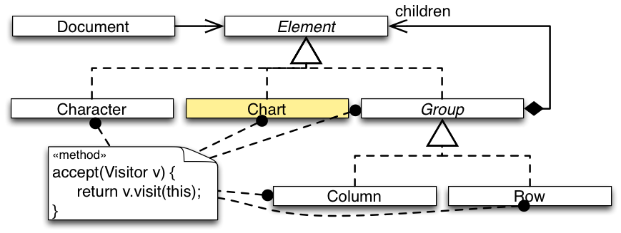
Problem: Since Visitor has no method for Chart, it’s objects won’t be processed by any visitor. Our design is not closed against this kind of change.
Issues of the Visitor-Based Design
E.g., adding Chartand updating Visitor
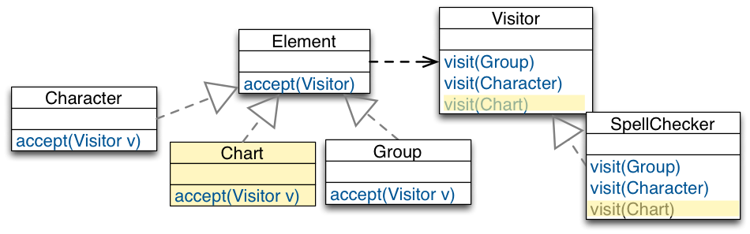
Issues:
We have to change all visitors for every new element.
Many visitors will have empty methods to comply to the interface.
Sometimes data structures are extended, but it‘s optional to process extensions.
E.g., it doesn’t make sense to spell-check charts, i.e., SpellChecker.visit(Chart) will be empty.
Issues of the Visitor-Based Design
E.g., adding Chartand keeping Visitor unchanged
Issues of the Visitor-Based Design
E.g., adding Chartand keeping Visitor unchanged
Try to avoid such visitors as these implementations are extremely fragile; they are maintenance nightmares when more elements are added.
Issues of the Visitor-Based Design
Partial Visiting Is Not Supported
Visitor is like a matrix (cross product of all Visitor and Element classes):
Partial visiting is not supported!
To provide a common abstract Visitor interface to Element, every derivative of Element need to be addressed by every derivative of Visitor; even if this might not make sense or is not needed. We have seen this for SpellChecker.visit(Chart)
Takeaway
Takeaway
Visitor brings functional-style decomposition to OO designs.
Use Visitor for stable element hierarchies.
Visitor works well in data hierarchies where new elements are never or at least not very often added.
Do not use it, if new elements are a likely change.
Visitor only makes sense if we have to add new operations often! In this case Visitor closes our design against these changes.
Solving the Expression Problem in Scala
Recommended reading: Matthias Zenger and Martin Odersky, Independently Extensible Solutions to the Expression Problem, FOOL 2005
Using "Standard" Object-Oriented Features
Solving the Expression Problem in Scala
The base trait.
trait Expressions {
type expression <: Expression
trait Expression {
def eval: Double
}
trait Constant extends Expression {
val v: Double
def eval = v
}
}
To make it possible to extend the Expression trait (i.e., to enable an independently developed extension to contribute functionality to Expressions ) we have to abstract over the concrete type of Expression.
object ExpressionsFramework
extends PrefixNotationForExpressions
with PostfixNotationForExpressions {
type expression = Expression
trait Expression
extends super[PrefixNotationForExpressions].Expression
with super[PostfixNotationForExpressions].Expression
case class Constant(v: Double)
extends super[PrefixNotationForExpressions].Constant
with super[PostfixNotationForExpressions].Constant
with Expression
case class Add(val l: expression, val r: expression)
extends super[PrefixNotationForExpressions].Add
with super[PostfixNotationForExpressions].Add
with Expression
}
Assessment:
The solution is open w.r.t. to directly adding new functionality to expressions and w.r.t. adding new data-types that inherit from Expression.
It is easy to add support for new data-types (e.g., Add).
It is possible to add new functionality (in a type-safe way), but this requires a deep-mixin composition.
The solution is subject to the fragile base-class problem.
trait Expressions {
trait Expression { def accept[T](visitor: visitor[T]): T }
class Constant(val v: Double) extends Expression {
def accept[T](visitor: visitor[T]): T = visitor.visitConstant(v)
}
type visitor[T] <: Visitor[T]
trait Visitor[T] {
def visitConstant(v: Double): T
}
trait EvalVisitor extends Visitor[Double] {
def visitConstant(v: Double): Double = v
}
}
This solution does not support adding methods/functionality to an expression at runtime or by a third-party extension, i.e., an independently developed extension of the Expressions trait cannot contribute to the Expression trait.
Solving the Expression Problem in Scala
Adding a new data-type.
trait AddExpressions extends Expressions {
class Add(
val l: Expression,
val r: Expression) extends Expression {
def accept[T](visitor: visitor[T]): T = visitor.visitAdd(l, r)
}
type visitor[T] <: Visitor[T]
trait Visitor[T] extends super.Visitor[T] {
def visitAdd(l: Expression, r: Expression): T
}
trait EvalVisitor extends super.EvalVisitor with Visitor[Double] {
this: visitor[Double] ⇒
def visitAdd(l: Expression, r: Expression): Double =
l.accept(this) + r.accept(this)
}
}
Solving the Expression Problem in Scala
Bringing everything together:
trait ExtendedExpressions extends AddExpressions with MultExpressions {
type visitor[T] = Visitor[T]
trait Visitor[T]
extends super[AddExpressions].Visitor[T]
with super[MultExpressions].Visitor[T]
object EvalVisitor
extends super[AddExpressions].EvalVisitor
with super[MultExpressions].EvalVisitor
with Visitor[Double] {
this: visitor[Double] ⇒ }
}
By making the type visitor concrete (type visitor[T] = Visitor[T]) the data-type hierarchy is now fixed; extension is only possible w.r.t. new functionality.
The solution is open w.r.t. to adding new functionality to expressions by means of a visitor and w.r.t. adding new data-types that inherit from Expression.
It is easy to add new functionality (e.g., PrefixNotationForExpressions).
It is possible to add new data-types (in a type-safe way), but this requires a deep-mixin composition.
The solution is subject to the fragile base-class problem.
Bridge Design Pattern
Intent
The Bridge Design Pattern
Intent
Decouple an abstraction from its implementation. So that the two can vary independently.
Motivation by Example
Motivation by Example
We want to support multiple operating systems:
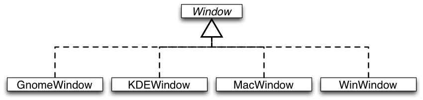
We want to provide different types of windows:
Motivation by Example
Two dimensions of variability!
Several problems:
Implementation bound to abstraction
Code duplication and proliferation of classes
Structure
Structure
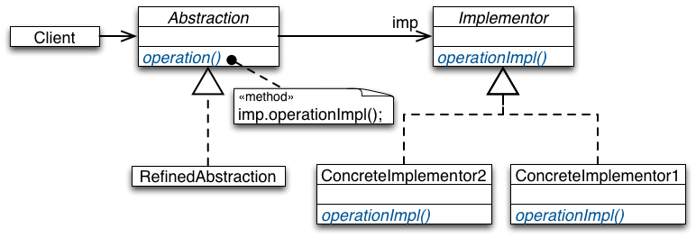
Combine inheritance and object composition:
Use inheritance to model variations of the abstraction.
Use object composition to abstract from implementation variations.
Bridge-Based Designs Illustrated
The Rationale Underlying the Solution:
Object composition and inheritance provide different trade-offs for expressing variations.
Object composition is used to implement dynamic variations with a fixed interface.
Implementation variations are more of this kind; although not always…
For static variations inheritance is preferred, because it supports structural variations.
Abstraction variations are mostly static.
They often imply variation of structure.
Inheritance allows adding of new field and methods.
Composition demands a fixed interface.
Advantages
Decoupling interface and implementation:
Implementation can be configured at run-time.
The implementation in use is hidden inside the abstraction.
Improved extensibility:
Both abstractions and their implementations become independently extensible by subclassing without a class proliferation.
Different abstractions and implementations can be combined.
Takeaway
The Bridge Pattern instructs to use object composition to bridge between two inheritance hierarchies when you need to combine two kinds of variations of an object type.
The Bridge Pattern allows to vary an abstraction and its implementation independently of each other.
Works well as long as there is no dependency between the implementation on abstraction variations, i.e., if they do not vary co-variantly.
Adapter Design Pattern
Intent
The Adapter Design Pattern
Intent
Intent: Fit foreign components into an existing design.
We want to reuse existing frameworks or libraries in our software, even if they do not match with our design.
We do not want to change our design to adhere to the structure of the reused components.
Case Study
The Adapter Design Pattern - Illustrated
We have acquired the framework GraphicalFramework.
GraphicalFramework provides the interface Node to draw rectangles with a headline and text to the screen.
Drawing is done by the framework, we just need to provide the data via the interface Node.
Desired Usage of the Framework
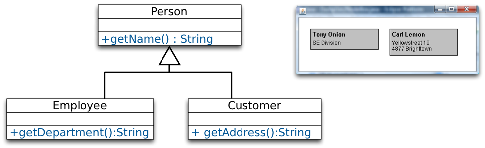
Our own design represents different kinds of persons.
We want to draw our data to the screen:
Name and department of Employee.
Name and address of Customer.
Adapting the Framework
We will create adapters to use the functionality of GraphicalFramework for our classes.
We have to adapt Employee and Customer to fit with Node.
Two Kinds of Adapters
Object Adapter
Object Adapter
Adaptee is wrapped by Adapter to fit in the interface of Target.
Adapter forwards calls of Client to request() to the specific methods of Adaptee (e.g, specificRequest()).
Using Object Adapter
Advantages:
Adapter works with Adaptee and any subclass of it.
Adapter can add functionality to Adaptee and its subclasses.
Disadvantages:
Cannot override methods in Adaptee.
Cannot reuse Adapter with subclasses of Target.
Adapter and Adaptee are different objects.
(Need to maintain relation between Adaptee and his Adapter)
Class Adapter
Class Adapter
Instead of having Adaptee as an attribute, Adapter inherits from Adaptee.
Using Class Adapter
Advantages:
Behavior of Adaptee can be overridden.
Adapter and Adaptee are the same object, no forwarding.
Disadvantages:
Adapter cannot be used with subclasses of Adaptee or Target.
Multiple inheritance may be required.
In Java: At least one of Target and Adaptee must be an Interface.
Takeaway
Takeaway
Adapter is an effective means to adapt existing behavior to the expected interfaces of a reusable component or framework.
Two variants: Object and Class Adapter
Both have their trade-offs.
Both have problems with the reusability of the adapter.
Pimp My Library (Scala)
Pimp-my-Library Idiom/Pattern (Scala)
Goal
Solve the problem that you can change or extend your own code, but if you use other libraries you have to take them as they are.
Solution Idea
Define a conversion function to convert your object into the required object and make this conversion implicit to let the compiler automatically perform the conversion when needed.
(Transparent generation of object adapters.)
Example Scenario
We want to be able to repeat a certain operation multiple times and want to store the result in some given mutable store.
But, Scala's (2.10) mutable collections do not define a common method to add an element to them.
In the following we develop a generalization of the previously shown repeat method. This variant enables the developer to specify the target data store.
Implementing a repeatAndStore method (naïve approach).
Divide the construction of multi-part objects in different steps, so that different implementations of these steps can construct different representations of objects.
Structure
Builder - Structure
Builder defines the individual steps of the construction of Product.
Director knows in which order to construct Product.
ConcreteBuilder implements the steps of construction.
Example
We want to construct different types of cars.
In this example, cars have an engine and an interior.
Builder - A Car Builder
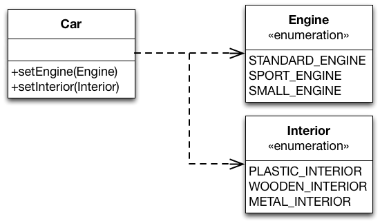
Builder - A Car Builder
CarBuilder defines the two methods to construct car parts. Concrete builders must implement these methods. For convenience, the instantiation of cars (buildCar()) is implemented in CarBuilder.
CarConstructionDirector is configured with a CarBuilder and calls the construction methods in the correct order.
Concrete builders can use complex logic.
E.g. a car builder creating cars depending on available parts in storage.
Good way to create composite structures.
Disadvantages:
May yield many classes.
Only works if all objects can be constructed using the same order.
Builder vs. Abstract Factory Pattern:
Abstract Factory focuses on creating multiple objects of a common family.
Abstract Factory knows what object to create.
Configuration is fixed after deployment of the software.
Builder focuses on creating complex objects step by step.
The director knows how to construct the object.
Configuration is chosen at runtime via the concrete builder.
Takeaway
Use Abstract Factory for creating objects depending on finite numbers of factors you know in advance.
E.g. if there are only three kinds of cars.
Use Builder for creating complex objects depending on unbound number of factors that are decided at runtime.
E.g. if cars can be configured with multiple different parts.
Command Design Pattern
Motivating Example: A Document Editor
Given some user operations such as "creating a document", "opening a file", "saving a document", "printing a document", "cutting selected text" and "pasting it back in", we then want to be able to access them from more than one place in the UI (a menu and a toolbar).
Motivating Example: A Document Editor
The implementation of each MenuItem subclass is the same as the implementation of one of ToolIcon subclasses.
Multiple copies of the same functionality → maintenance problem.
Need a mechanism for MenuItem and ToolIcon to share implementations.
Need to separate the user-interface control from it’s implementation so that implementations can be shared.
Want to also support a general undo capability so that the user can reverse previous operations.
Solution: Decouple Invoker from Receiver
Solution: Decouple Invoker from Receiver
In a Nutshell
Intent
Encapsulate a request to an object, thereby allowing to:
Issue requests without knowing the receiver or the operation being requested.
Parameterize clients with different requests.
Queue or log requests and support undoable requests.
Structure
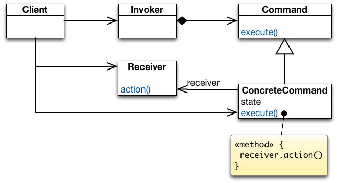
Command declares the interface for executing an operation.
ConcreteCommand defines a receiver-action binding by implementing execute().
Client creates a ConcreteCommand object, sets its Receiver, and configures the command of the Invoker.
Invoker asks its command to carry out the request.
Receiver knows how to perform the operations associated with carrying out a request.
Collaboration
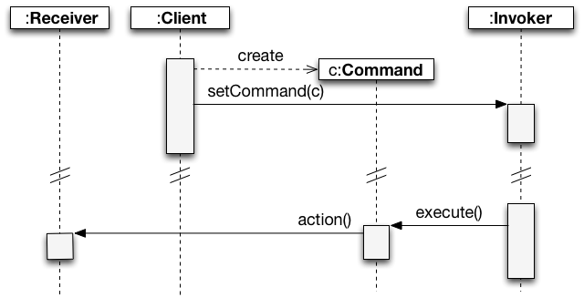
Advantages of Command
Implementation Sharing
A command centralizes an operation to a single location so that multiple copies of the code are not necessary.
Different user-interface controls can share the same implementation
(e.g., a button, tool icon, and menu item can all perform the same operation).
Decouples the user interface from the operation being performed.
Supporting Undoable Operations
Commands store enough information to undo the performed operation.
Each command subclass implements its unexecute() function;
when unexecute() is called the command reverses its action.
Supporting Multiple Levels Of Undo
Single Level of Undo
Multiple Levels of Undo
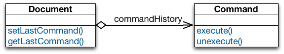
Undoing more than just the last command allows the user to back up farther and farther each time undo is selected from the menu.
Adding a redo feature: it would also be nice for a user to be able to redo an undone operation.
Redo should have multiple levels corresponding to the number of undo's issued by the user.
Implementing a Command History
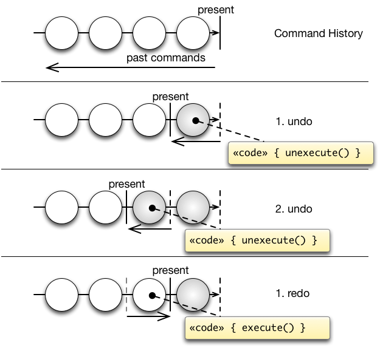
The command history can be seen as a list of past commands.
As new commands execute they are added to the front of the history.
To undo a command, unexecute() is called on the command at the front of the list.
The present pointer is moved past that command.
To undo the command before that, unexecute() is called on the next command in the history.
The present pointer is moved to point before that command.
To redo the command that was just undone, execute() is called on that command.
The present pointer is moved up past that command.
Macro Commands
Takeaway
Takeaway
Command allows to decouple the invoker of an operation from the receiver of that operation.
A Command object encapsulates the knowledge about a concrete operation and a concrete receiver of that operation.
As a result:
the same invoker can be reused with different operation-receiver pairs.
the same operation-receiver pair can be plugged into different invokers.
commands can be queued, undone/redone, and composed into macro-commands.
Example Implementation
In practice (in GUI applications), you often have multiple instances of the command design pattern which are related to different kinds of actions.
The command pattern is used to associate some action with a menu item or a tool bar icon and which (as a second step) then may require some further user input/interacts with the environment. These commands are usually not stored in any command history as it makes no sense to redo/undo them (e.g., "open file", "save file", "copy text to clipboard").
You have commands that update the state of an application (i.e., manipulates the application's data) and which you may want to store in the command history because you want to be able to undo/redo the corresponding action. These commands then have to offer an execute and unexecute methods.
Some commands, e.g., "paste clipboard content" are typically triggered by some user interaction, but do not require any further user interaction and, hence, could be regarded as a command of the second type. But, this is deceiving. Imagine that - at some later point in time - the user undos the last editing steps including the pasting of the clipboard content. When the user then redos that step, he expects that the same content is added again as was just removed/originally added – even if the clipboard content has changed in the meantime. Hence, even in this case we want to distinguish between the command that interacts with the environment and the command that directly (after gathering all information) with the document.
Example Implementation
Supporting multiple-step undo/redo
The application:
object Application { var document: String = "" }
The Command trait:
trait Command {
def execute(): Unit
def unexecute(): Unit
}
In this case, the responsibility for calling a ConcreteCommand's execute method is delegated to the CommandManager.
Example Implementation
Supporting multiple-step undo/redo
Creating a command object and adding it to the history:
object askForInput extends (() ⇒ Unit) {
def apply() {
import javax.swing.JOptionPane.showInputDialog
val text = showInputDialog("Please, enter some text.")
if (text ne null) {
CommandManager.execute(new AddTextCommand(text))
}
}
}
The askForInput object has the responsibility to ask the user for some input and to add the respective input to the document. This object is also a ConcreteCommand where the execute method is called apply.
Example Implementation
Supporting multiple-step undo/redo
Example usage:
object CommandDemo extends App {
for (i ← 0 until 3) {
askForInput()
}
CommandManager.undo
CommandManager.undo
CommandManager.redo
}
Domain Specific Languages
Domain Specific languages (DSLs)
[...] a good programmer in these times does not just write
programs. [...] a good programmer does language design,
though not from scratch, but building on the frame of a base
language. -Guy Steele Jr.
Introduction
A Domain Specific Language is a computer programming language focused on a particular domain -Martin Fowler
Here are two examples of DSLs:
An example of DSLs is an Antlr grammar for defining integers, comments and lower case letters.
Here we create an SQL table, insert and select records from it.
CREATE TABLE Persons
(
PersonID int,
LastName varchar(255),
FirstName varchar(255),
Address varchar(255),
City varchar(255)
);
insert into Persons values(1,'Eichberg','Michael','Hochschulstr. 10','Darmstadt');
select Address from Persons where LastName='Eichberg';
Examples of DSLs are : HTML, SQL, Yacc, Antlr ...
What distinguishes DSLs is their high expressiveness inside the boundaries of a particular domain and limited expressiveness outside the boundaries of that domain.
So, a single project can contain many DSLs in different parts where every language addresses a specific domain and all integrated in one project.
Abstraction as a tool for building good Software
As we learned before that abstraction is the key to to building good software as it complies with many class design principles and design patterns.
There are many abstraction mechanisms as:
Abstract Data Types (ADTs)
Classes
Objects
Modularization
Higher order Functions
....
Alternatively abstraction as a Programming language
A good way of abstraction is to design a programming language specific to every targeted domain which encloses the terms and semantics for that domain.
This language should be easy to use and to extend by domain experts.
Avoid noise about programming language details and have focus on the problem domain.
Why build my own DSL?
There are several reasons that make DSLs more practical in solving Domain specific problems
A DSL is more understandable for the domain experts than a General Purpose Language(GPL) making it much easier to learn, use, validate and modify
Having an own library that captures domain specific semantics and that could be extensible to adapt future evolutions
The code is almost self-documented
It is maintainable, portable, reusable and easier to check
It may be easier to apply formal methods on DSLs as reasoning can be done within the domain semantics
Desired properties of DSLs
To build an optimal DSL we should make use of the advantages of the previously mentionned approaches.
Tool support for debugging/syntax highlighting/code completion
...
Tradeoffs of building a DSL
When building a DSL you need to implement your own parser/compiler
Building a language for every application domain could be tedious
The programmer needs to anticipate future changes that could be introduced to that domain as it evolves over time
This is quite difficult or could be impossible
Solution : Make use of the existing features of a general purpose programming language
DSLs Takeaway
DSLs
Precise representation of domain concepts
++
Tool support
+/-
Infrastructure reuse
--
High Modularity
-
Composability
--
Static safety
+/-
It is excellent for representing domain concepts as it is build from scratch to adopt that domain. An example is SQL for representing the databases domain.
The tool support could be an advantage/disadvantage depending on the effort that we need to develop tool support for the DSL.
The static saftey could be advantage/disadvantage according to whether it is integrated with other language or if it is standalone.
There is no infrastructure reuse as the whole "package"(grammar/parser/compiler/...) has to be built from scratch.
The composability also is a disadvantage as the language is strictly for representing a specific domain and not composable with languages for other domains.
The "o" symbol denotes that this feature is not applicable.
Embedding of a DSL
Example: SQLj
sql private static iterator EmployeeIterator(String, String, BigDecimal);
...
EmployeeIterator iter;
#sql [ctx] iter = {
SELECT LASTNAME
, FIRSTNME
, SALARY
FROM DSN8710.EMP
WHERE SALARY BETWEEN :min AND :max
};
do {
#sql {
FETCH :iter
INTO :lastname, :firstname, :salary
};
// Print row...
} while (!iter.endFetch());
iter.close();
The DSL has its own syntax which is different from the syntax of the host language
A special compiler needed to compile the DSL then it passes to the host language compiler
Disadvantages: composability and also in IDEs, syntax highlighting/code completion is not available for the DSL but only for the host language
Code Generators
Use preprocessors to integrate a DSL into a a General purpose host language.
Files containing the DSL code and host language code will be mixed and converted to program fragments of the host language.
Advantage: quite flexible and makes multiple interpretations possible.
Disadvantage: difficult interoperability among preprocessors and the need to almost build an almost full featured compiler.
An example is SQLj.
Embedding of DSLs Takeaway
DSLs
Embedding of DSLs
Precise representation of domain concepts
++
o
Tool support
+/-
-
Infrastructure reuse
--
o
High Modularity
-
o
Composability
--
-
Static safety
+/-
+
Embedding of a DSL in a host language is statically safe as it has its own compiler which will always guarantee the static safety
of the embedded language, independent from the host language.
Embedding of a DSL in a host language will make it not composable as it has its own compiler/interpreter that differs from that of the
host language.
The tool support is just for the host language not for the embedded language.
Embedded Domain Specific Languages (EDSLs)
Embedding a DSL into an already existing general purpose programming language will greatly reduce the implementation effort.
The embedded language will make use of the features of the host language.
But on the other side embedding the DSL as a library will make it have a single interpretation that is tightly coupled to the host language.
There are many approaches for embedding a DSL into a general purpose language.
Embedded Interpreter
Make use of the host language parser and compiler by embedding the DSL as host language expressions.
The written syntax could be interpreted by a host language interpreter
This is known as the Interpreter pattern
However, mixing several DSLs' expressions will create ambiguity on how should every expression be interpreted .
Pure Embedding
Similar to a traditional library approach, however, domain specific semantics are taken into consideration while constructing the language.
Domain types are implemented as host language types.
However host language and DSL as tightly coupled.
Embedded DSLs Takeaway
DSLs
Embedding of DSLs
Embedded DSLs
Precise representation of domain concepts
++
o
-
Tool support
+/-
-
+/-
Infrastructure reuse
--
o
++
High Modularity
-
o
o
Composability
--
-
+
Static safety
+/-
+
+/-
Embedded DSLs are bound by the syntax of the host language. So it could have some shortage in representing the domain concepts.
Concerning tool support, there is tool support (syntax highlighting, code completion,...) for the host language but there might not be tool support for the embedded DSL (e.g. slick).
The static safety depends on the type safety of the host language. So if the host language is dynamically typed then there is no type safety for the EDSL.
Host languages of DSLs
Many of today's General purpose languages can be valid as a host languages for EDSLs. For example: Java, Haskell, Scala,...
We have chosen scala for its rich features as family polymorohism, support for higher order functions, mixin composition, syntactic flexibility, advanced type system, ...
However all of the previously mentionned languages can be used to build one.
Case Study- The Regions language
Derived from the image processing domain
It is basically for one domain specific type Regions.
Along with operations required for describing regions and building more complex regions.
For demonstration purposes, the language is kept simple. However, it can be easily extended without changing the basic language structure.
The Regions language - cont
trait Regions{
type Vector= (double,double)
type Region
def univ : Region
def empty : Region
def circle : Region
def scale(v : Vector, x :Region) : Region
def union(x : Region, y :Region) : Region
}
def program(semantics : Regions) : semantics. Region ={
import semantics._
val ellipse24=scale ((2,4), circle)
union (univ,ellipse24) //The returned expression
}
Here two type members are declared:
Vector as a pair of doubles
Region as an abstract domain type that will be defined in subclasses.
Beside type members, operations are defined to represent
empty regions
universal regions: that include every point
circle to represent a unit circle aroung the origin of the coordinate space
scaling a region by a by a vector v resulting in a new scaled region
and the union between regions
A client of the Regions interface is defined having a dependent return type that depends on the semantics implementation of type
Various sematics for the Regions type
After defining the trait of the Regions language, we can now define various semantics that extend this trait and implement abstract types and operations.
An example of the operations are :
checking if a point is inside or outside a region
pretty printing of region operations
The Evaluation trait
trait Evaluation extends Regions{
type Region = Vector => boolean
def univ : Region = p => true
def empty : Region = p =>false
def circle : Region = p => p._1*p._1 + p._2*p._2 < 1
def scale(v : Vector, x :Region) : Region = p => x(p._1/v._1,p._2/v._2)
def union(x : Region, y :Region) : Region = p => x(p) || y(p)
}
object Eval extends Evaluation
A region is seen as a set of points
Points inside the region are mapped to true and those outside are mapped to false
For example, the universal region contains all points so it will always output true. On the other hand, the empty region does not
contain any point so it will always output false.
Also in circle, a point is seen is a part of the unit circle if the square sum of its components is less than or equal one.
In union, we can use characteristic functions of regions we want to combine to map all
points to true which are mapped to true by any of the composed regions.
The pretty printing trait
trait Printing extends Regions {
type Region = String
def univ : Region = "univ"
def empty : Region = "empty"
def circle : Region = "circle"
def scale(v : Vector, x : Region) : Region
= "scale(" + v + ", " + x + ")"
def union(x : Region, y : Region) : Region
= "union(" + x + ", " + y + ")"
}
object Print extends Printing
Mapping the domain type Regions to a string and ouputing the corresponding string representation for every operation.
Optimizing the Regions DSL
trait Optimization extends Regions {
val semantics : Regions
type Region = (semantics.Region, boolean)
def univ : Region = (semantics.univ, true)
def empty : Region = (semantics.empty, false)
def circle : Region = (semantics.circle, false)
def scale(v : Vector, x : Region) : Region =
if (x._2) (semantics.univ, true)
else (semantics.scale(v, x._1), false)
def union(x : Region, y : Region) : Region =
if (x._2 || y._2) (semantics.univ, true)
else (semantics.union(x._1, y._1), false)
}
// prints "union(univ, scale((2.0,4.0), circle)"
println(program(Print))
object OptimizePrint extends Optimization { val semantics = Print }
// prints "(univ, true)"
println(program(OptimizePrint))
The Region here is represented as a pair of unoptimized region and a boolean value that indicates whether this region is statically known to be universal or not
For example, in the union operation, if any of the regions is the universal region then the resulting region is universal.
In the Optimization trait, the actual optimization is done in the union and scale operations. Where these operations can make use of the additional information
given in the univ, empty and circle regions to shorten evaluation paths.
Since the Optimization trait can work on any region semantics, therefore, it can work with the Pretty printing and optimization semantics defined before.


 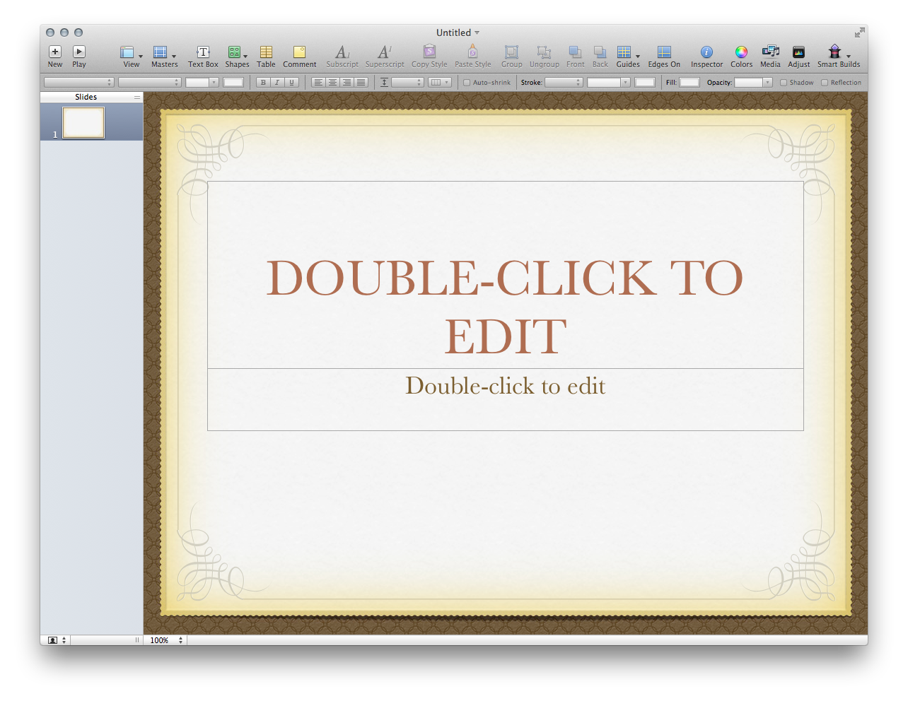
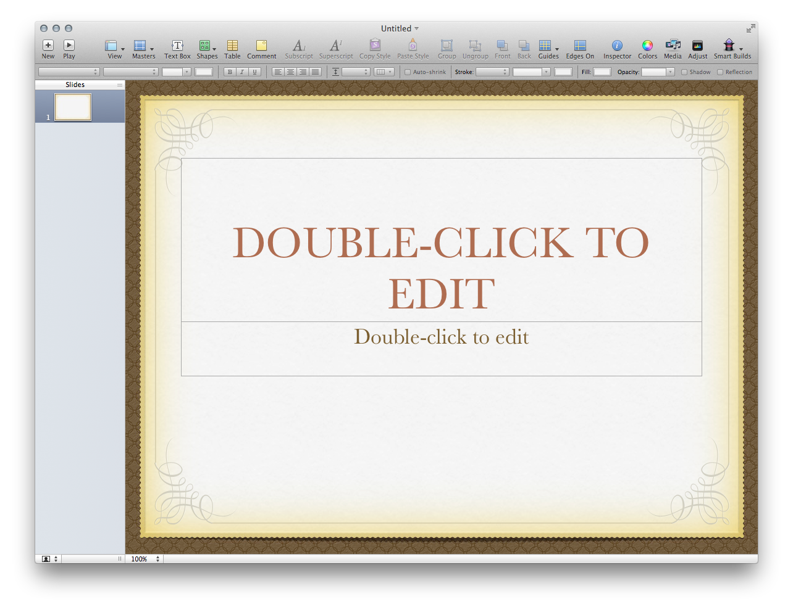


 ...
...